Tous les modèles 3D déjà validés du prototype, à faire tourner, à zoomer et à animer dans la page. Chaque fiche dit d'où vient le modèle, avec quels outils et quelles licences, et ses défauts connus. Les personnages faits avec MetaHuman n'y sont pour l'instant qu'en images : les sortir d'Unreal en 3D (cheveux, peau, squelette du visage) est un travail à faire dans Unreal, prévu plus tard.
Les modèles du prototype
Touchez « Voir en 3D » pour charger un modèle (sa taille est indiquée). Ensuite : faites glisser pour tourner autour, pincez ou utilisez la molette pour zoomer, et choisissez une animation dans la liste quand le modèle en a.
Loup
T-0097 · validé le 01/10/2026 (version 2, correction 3) ; teinte corrigée le 02/10/2026 (T-0128, D-225) ; qualité améliorée le 06/10/2026 (T-0145, D-240)
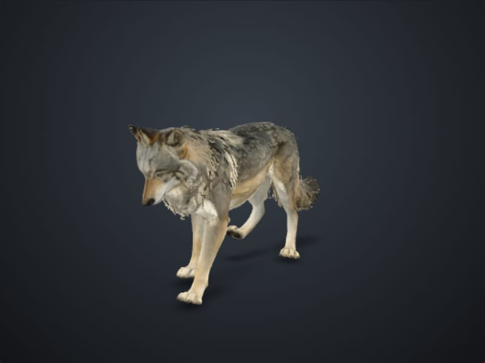
Le loup isolé des plaines de la quête « L'Agneau et le Loup » : gris-brun, silhouette basse et allongée, tête sous la ligne du dos (bible artistique, § 6.5).
Triangles
65 600 (comme le fichier validé)
Taille
1,37 m de long, queue tendue comprise (1,39 m avec les poils de la queue) ; 0,85 m aux oreilles ; 0,35 m de large.
Animations
12 : Attaque (Attack, 1,33 s), Mort (Death, 1,08 s), Mange (Eating, 2,54 s), Galop (Gallop, 0,58 s), Saut au galop (Gallop_Jump, 0,92 s), Attente (Idle, 3,33 s), Attente 2 (Idle_2, 3,33 s), Attente, tête basse (Idle_2_HeadLow, 4 s), Touché 1 (Idle_HitReact1, 0,67 s), Touché 2 (Idle_HitReact2, 0,67 s), Saut puis arrêt (Jump_ToIdle, 1,33 s), Marche (Walk, 1,08 s). Sur place : dans le jeu, c'est Unreal qui fera avancer le loup.
Défauts connus
De très près, ce n'est pas encore du niveau d'un jeu AAA (T-0145) : poil fait par programme, sans épi ni remous ; le motif « en toile » de la carte de relief d'origine se voit encore sur la tête et le flanc ; la collerette prend un aspect d'écailles, déjà visible à la distance de cette visionneuse (une teinte par carte).
Des cartes de poils entrent un peu dans la peau : elles suivent les os, sans physique ; dans les plis (cou baissé, Eating, Attack, queue contre les cuisses), jusqu'à 2 cm, sur 2 % de leurs sommets au pire instant. Le bout de la queue passe jusqu'à 0,9 cm sous le sol dans Attack et les sauts.
Peau encore étirée au pli de la hanche dans le galop et les sauts. La toile entre la queue et les cuisses a presque disparu (correction 3).
Death : couché sur le flanc, les pattes se traversent (jusqu'à 3 cm), le corps reste raide et la queue se dresse un instant.
Attack : la tête s'enfonce un peu dans les épaules (pli du cou très atténué), et la gueule ne s'ouvre pas : le squelette n'a pas d'os de mâchoire.
Animations sur place : les pieds glissent un peu dans Walk et Gallop.
Eating : dos un peu voûté, pattes avant qui penchent vers l'arrière. Gallop encore un peu ramassé (animation du pack).
Quelques traînées pâles sous le ventre et à l'aisselle (couleur d'origine, gardée).
Gallop_Jump : le point le plus bas passe 1,1 cm sous le sol entre deux images (invisible à 24 images par seconde).
Longueur du museau à la croupe : 1,47 fois la hauteur au garrot (un vrai loup est vers 1,6).
Fabrication, licences et fichiers
Fabrication
Image : FLUX.2 [klein] 4B, en local ; détourage rembg et BiRefNet.
3D : TRELLIS.2 (graine 42, texture 4096 px).
Retouche dans Blender : tronc allongé de 25 %, tête redressée, peau refaite d'une seule pièce (remaillage de 7 mm), 60 000 triangles, couleur et relief recuits. Le 02/10/2026 (T-0128, D-225 (4)) : couleur recuite sans le métal de TRELLIS.2, qui l'assombrissait de 20 % (37 % en lumière linéaire) ; elle est maintenant à 98 % de celle du modèle TRELLIS.2 (97 % en linéaire). Maillage, squelette et animations inchangés.
Squelette (39 os) et 12 animations du loup du pack Quaternius, adaptés au corps ; pieds calés au sol à chaque image ; boucles sans saut.
Qualité (T-0145, D-240 (1)), le 06/10/2026 : dépliage resserré (38 à 56,5 % de la texture) ; détail de poil orienté cuit dans la couleur et le relief, rugosité par matière et occlusion ; poils en cartes : 260 à la queue et 300 à la collerette (5 600 triangles), en 6 teintes prises dans la fiche et dans la peau livrée, qui suivent le squelette ; aucun noir plus sombre que #0C0C0C (D-240 (2)). Forme, squelette et animations inchangés (écart 0,000 cm à chaque image) ; couleur gardée (0,999 de la précédente).
Licences
FLUX.2 [klein] 4B : Apache-2.0 · TRELLIS.2 : MIT (avec DINOv3, usage commercial permis) · rembg et BiRefNet : MIT · squelette et animations Quaternius : CC0 · détail de poil et cartes de poils : faits par programme (T-0145) · Blender (GPL) employé comme outil.
Pour cette page
Textures du corps (couleur, relief, occlusion et rugosité) réduites de 4 096 à 2 048 px, en JPEG. Texture des cartes de poils gardée en PNG, telle quelle (loup_poils.png, 3 072 × 2 048 px), pour sa transparence. Maillage, squelette et animations inchangés : clés d'animation identiques au bit près à celles du fichier validé (contrôle du 06/10/2026, comparer_anims.mjs). 6,8 Mo en 6 fichiers, au lieu de 46,2 Mo.
Fichier validé
E:\aaa-proto\essai\loup\loup.glb Détails : E:\aaa-proto\essai\loup\LISEZMOI.md ; avis des vérificateurs dans T-0145 ; version précédente dans avant-qualite\
Mort-vivant
T-0056 · validé le 30/09/2026
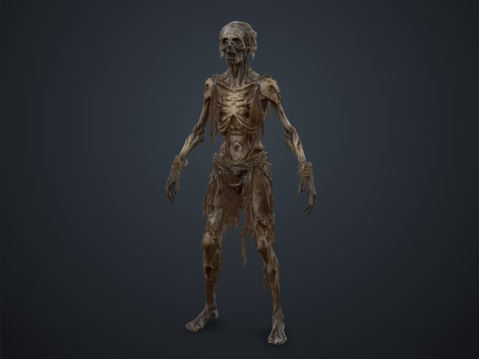
Pas d'animation dans ce modèle.
Créature du prototype, faite d'après sa fiche (détourée de son décor).
Triangles
43 947 (comme le fichier validé)
Taille
1,75 m.
Animations
Aucune dans le fichier validé : son squelette porte les noms du mannequin UE5, les animations sont à recibler dans Unreal.
Défauts connus
Bras levés au-delà de l'horizontale : les pans du gilet à l'épaule s'écartent un peu.
Pas d'os de torsion (avant-bras, cuisses).
Fabrication, licences et fichiers
Fabrication
Image : fiche de concept personnages\mort-vivant_v1_refuse-fond.png, faite avec Codex, l'outil d'images d'OpenAI, le 29/09/2026 (personnages\LISEZMOI.md), détourée de son décor avec rembg et BiRefNet.
3D : TRELLIS.2 (graine 42), surface simple d'environ 60 000 faces, nettoyée ; textures de 2 048 px ; relief cuit depuis une version à 290 000 faces (Cycles).
Squelette UniRig de 53 os aux noms du mannequin UE5 ; poids de peau de Blender, corrigés pour que les lambeaux près des mains ne suivent pas les bras.
Métal forcé à 0 : TRELLIS.2 en avait mis à tort sur 93 % de la texture.
Licences
Fiche d'entrée : image faite avec l'outil d'images d'OpenAI (Codex), d'après personnages\LISEZMOI.md ; ses conditions d'usage n'ont pas été relues pour cette page et restent à vérifier. · TRELLIS.2 : MIT (avec DINOv3, usage commercial permis) · rembg et BiRefNet : MIT · UniRig : MIT · Blender (GPL) employé comme outil.
Pour cette page
Squelette retiré (pas d'animation) : le modèle est dans sa pose de référence, en A. Relief : la carte OpenGL, celle que lit le glTF (le GLB d'échange porte la carte DirectX, faite pour Unreal). Textures en JPEG. 5,5 Mo en 5 fichiers, au lieu de 23,4 Mo.
Le grand mort-vivant qui mène la horde du didacticiel et se voit de loin (D-234 (2)) : un champion de l'Ordre, mort, plus grand et plus massif que les autres, sous l'Ange Déchu. Heaume ouvert couronné de pointes, énormes spalières, cage thoracique à nu, tabard ivoire galonné d'or, cotte de mailles. Il a le squelette et les animations du mort-vivant (fiche voisine), pour le remplacer dans la horde sans autre travail. Pas encore dans Unreal : l'import est un ticket à venir.
Triangles
63 025 (comme le fichier validé)
Taille
2,50 m de haut, sous l'Ange Déchu (3,60 m) ; 1,64 m d'une main à l'autre dans la pose de repos (bras écartés), 0,55 m d'avant en arrière. Le mort-vivant du projet mesure 1,75 m.
Animations
8 : Mort (Death01, 3 s), Coup reçu (Hit_Chest, 0,42 s), Déséquilibre (Idle_Shield_Break, 1,08 s), Course (Jog_Fwd_Loop, 1,17 s), Marche (Walk_Loop, 1,67 s), Attente (Zombie_Idle_Loop, 1,33 s), Griffure (Zombie_Scratch, 1,79 s), Démarche lourde (Zombie_Walk_Fwd_Loop, 1,33 s). Les mêmes clés que le mort-vivant du jeu, tirées des mêmes animations Quaternius : Zombie_Scratch est l'attaque (griffure), Hit_Chest le coup reçu, Idle_Shield_Break le déséquilibre, Death01 la mort. Dans le jeu, le mort-vivant marche et court avec les animations du mannequin d'Unreal, qui n'existent pas hors d'Unreal : ici, Walk_Loop, Jog_Fwd_Loop et Zombie_Idle_Loop les remplacent, et Zombie_Walk_Fwd_Loop est une démarche lourde proposée. Sur place : c'est Unreal qui fera avancer la créature. Pieds jusqu'à 2,5 cm sous le sol, faute de calage dans cette page.
Défauts connus
Zombie_Scratch (griffure) : la cuisse gauche entre de 2,9 cm au plus dans la cotte, sur 13 images sur 44 ; le mort-vivant fait des traversées du même ordre (jusqu'à 2,8 cm).
Death01 : une fois couché, les doigts de la main gauche entrent jusqu'à 11,7 cm dans le sol, et pendant la chute la spalière droite jusqu'à 10,5 cm ; avec les mêmes clés, le mort-vivant s'enfonce plus (13,9 cm).
Peau mauve (#4E3E3E aux bras), alors que le mort-vivant est brun (#44392E) : elle distingue le meneur, mais s'écarte du style du mort-vivant.
Petit à-coup du bassin dans les marches (1 cm), laissé par la correction des pieds : invisible à distance de jeu.
Dépliage à 54 % de la texture, sous les 60 % visés par l'étude de qualité.
Décisions
Du directeur, qui ont fait ce modèle :
Un meneur d'environ 2,5 m, qui mène la horde de 20 créatures et se voit de loin (D-234 (2)).
Qualité améliorée dès la fabrication : génération en 1536 (piste C de l'étude de qualité) et chaîne de qualité des bêtes (piste A) (D-240 (1)) ; lancé le 07/10/2026 (D-250 (2)).
Questions ouvertes
Pour le directeur, non tranchées :
Choisir l'image de départ (champion retenu, porte-étendard à refaire sans croix, ou déserteur), la démarche (la lourde, Zombie_Walk_Fwd_Loop, ou celle du mort-vivant) et la teinte (peau mauve, ou ramenée au brun du mort-vivant), et dire que faire des deux défauts d'animation ci-dessus (cuisse dans la cotte, doigts dans le sol à la mort ; défauts déclarés, D-235 (8)).
Fabrication, licences et fichiers
Fabrication
Image : FLUX.2 [klein] 4B, en local, dans le style du mort-vivant ; 3 variantes (champion, porte-étendard, déserteur), jugées sur des critères écrits avant le choix : silhouette lisible de loin, fidélité au mort-vivant et à la bible, faisable en 3D et en animation, bien distinct des morts-vivants variés ; retenue : le champion ; détourage BiRefNet (rembg).
3D : TRELLIS.2 en 1536 (piste C de l'étude de qualité, D-240), graine 42 ; maillage de jeu de 63 025 triangles, nettoyé de 160 petits débris ; relief cuit depuis une version à 393 000 faces.
Squelette : copie de celui du mort-vivant (53 os, mêmes noms, même ordre, mêmes parents, même rotation de repos) ; seules les longueurs changent (UniRig ne sert que de repères) ; poids de peau de Blender, corrigés pour le bras, la cotte et le tabard ; spalières suivies à 50 % par le bras.
Animations : les 8 du mort-vivant (Quaternius), reciblées sur le mort-vivant puis recopiées telles quelles, bassin × 1,466 ; une clé par image (24 par seconde) ; boucles fermées ; pieds : bassin relevé image par image, pour qu'aucun point ne passe plus de 2,5 cm sous le sol (méthode de la correction 1 de T-0153) ; Death01 : pieds seuls (correction 1).
Qualité, piste A (D-240 (1)) : 8 zones de matière (couronne, spalières, brassards, cotte de mailles, ceinture, tabard, bottes, os du crâne) et peau desséchée ; détail de matière (piqûres et rayures du métal, anneaux de la maille, trame du tissu, grain du cuir et de la peau), rugosité par matière, occlusion ; métal sur l'armure seulement (0,12 dans la rouille, jusqu'à 0,85 sur l'acier à nu) ; aucun noir plus sombre que #1E1E1E (bible, § 5 : ni poils ni crins noirs de bête, D-240 (2)).
Licences
FLUX.2 [klein] 4B : Apache-2.0 · TRELLIS.2 : MIT (avec DINOv3, usage commercial permis) · rembg et BiRefNet : MIT · UniRig : MIT (repères seulement) · animations de Quaternius (Universal Animation Library 1 et 2, celles du jeu) : CC0 1.0 · Blender (GPL) employé comme outil.
Pour cette page
Textures (couleur, relief, et occlusion, rugosité et métal dans une même image) réduites de 4 096 à 2 048 px, en JPEG. Le maillage est à facettes : ses normales ne sont pas stockées (même rendu, voir « Comment la page est faite »). Squelette et animations inchangés : clés d'animation identiques au bit près à celles du fichier validé (contrôle du 07/10/2026, comparer_anims.mjs). 8,8 Mo en 5 fichiers, au lieu de 81,5 Mo.
Fichier validé
E:\aaa-proto\essai\horde\meneur\meneur.glb Détails : E:\aaa-proto\essai\horde\meneur\LISEZMOI.md ; avis des vérificateurs dans T-0153
Mort-vivant soldat
T-0154 · validé le 07/10/2026 (correction 1)
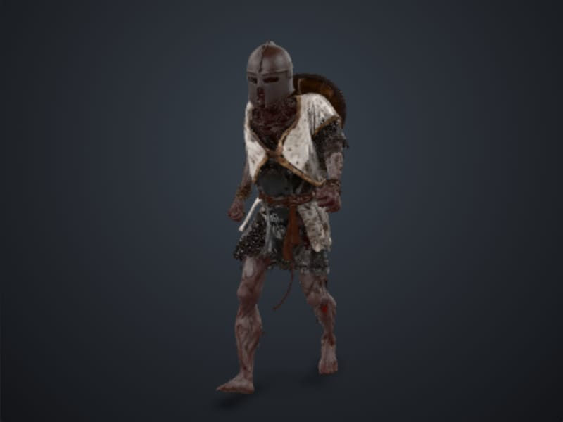
Un des quatre morts-vivants variés de la horde (D-234 (2)), fait à partir du mort-vivant (fiche voisine) : un soldat de l'Ordre mort. Heaume en seau à fente, cotte de mailles, tabard ivoire à galon d'or, ceinture de cuir, pieds nus ; petit bouclier rond porté haut dans le dos. À 15 m dans la brume, on le reconnaît à sa tête carrée, au bord du bouclier derrière l'épaule et à la grande tache claire du tabard.
Triangles
47 990 (comme le fichier validé)
Taille
1,78 m de haut ; 1,11 m d'une main à l'autre dans la pose de repos (bras écartés), 0,53 m d'avant en arrière. Le mort-vivant du projet mesure 1,75 m, le meneur 2,50 m.
Animations
8 : Mort (Death01, 3 s), Coup reçu (Hit_Chest, 0,42 s), Déséquilibre (Idle_Shield_Break, 1,08 s), Course (Jog_Fwd_Loop, 1,17 s), Marche (Walk_Loop, 1,67 s), Attente (Zombie_Idle_Loop, 1,33 s), Griffure (Zombie_Scratch, 1,79 s), Démarche lourde (Zombie_Walk_Fwd_Loop, 1,33 s). Les mêmes clés que le mort-vivant du jeu, tirées des mêmes animations Quaternius : Zombie_Scratch est l'attaque (griffure), Hit_Chest le coup reçu, Idle_Shield_Break le déséquilibre, Death01 la mort. Dans le jeu, le mort-vivant marche et court avec les animations du mannequin d'Unreal, qui n'existent pas hors d'Unreal : ici, Walk_Loop, Jog_Fwd_Loop et Zombie_Idle_Loop les remplacent, et Zombie_Walk_Fwd_Loop est une démarche lourde proposée. Sur place : c'est Unreal qui fera avancer la créature. Pieds jusqu'à 2,5 cm sous le sol, faute de calage dans cette page.
Défauts connus
Armes portées sur le corps, pas en main : les animations du mort-vivant sont à mains nues. Des armes en main seraient des modèles à part, tenus par la main dans Unreal, avec des animations armées (ticket à part).
Deux traversées, du même ordre que celles du mort-vivant : à la course (Jog_Fwd_Loop), le bras gauche entre de 1,5 cm dans le tabard, à l'aisselle ; à la griffure, la cuisse gauche entre de 2,5 cm dans la jupe de maille. Invisibles, même à 1,2 m.
Couché sur le dos (Death01), ce qu'il porte au dos passe jusqu'à 10,1 cm sous le sol (le mort-vivant du projet : 13,9 cm). Relever le corps le ferait flotter.
Peau un peu plus rouge que celle du mort-vivant (#443531, 14° contre 29°), et lueur des yeux retirée de la texture : si elle est voulue, elle se fera dans le matériau d'Unreal.
Décisions
Du directeur, qui ont fait ce modèle :
Des morts-vivants variés dans la horde de 20 : soldats et déserteurs morts, avec des armures, des armes et des silhouettes différentes, faits à partir du modèle existant (D-234 (2)).
Qualité améliorée dès la fabrication : génération en 1536 (piste C de l'étude de qualité) et chaîne de qualité des bêtes (piste A) (D-240 (1)) ; lancé le 07/10/2026 (D-250 (2)).
Questions ouvertes
Pour le directeur, non tranchées :
Garder ces variantes ou en refaire une (environ 0,3 % de la semaine), garder les armes au dos ou les mettre en main, choisir que faire de ce qui passe sous le sol à la mort (armes qui tombent, ou mort en avant), garder la teinte ou la ramener au brun du mort-vivant, remettre ou non la lueur des yeux, et dire que faire de ses deux traversées (course, griffure) (défauts déclarés, D-235 (8)).
Fabrication, licences et fichiers
Fabrication
Image : celle du mort-vivant du projet, éditée par FLUX.2 [klein] 4B, en local : même corps, même visage, même peau, même pose ; seuls l'armure, l'arme et la coiffe changent ; retenue : graine 8 ; lueur des yeux adoucie ; détourage BiRefNet (rembg).
3D : TRELLIS.2 en 1536 (piste C, D-240), graine 42 ; maillage de jeu de 47 990 triangles ; relief cuit depuis une version à 400 000 faces.
Squelette : copie de celui du mort-vivant (53 os, mêmes noms, même ordre, mêmes parents, même rotation de repos) ; seules les longueurs changent (UniRig ne sert que de repères) ; à la liaison, bras écartés de 10° de plus et épaules suivies à 50 % par le bras, ce qui réduit les traversées.
Animations : les 8 du mort-vivant et du meneur (Quaternius), mêmes clés de rotation, une clé par image (24 par seconde), boucles fermées ; pieds : bassin relevé image par image, pour qu'aucun point ne passe plus de 2,5 cm sous le sol (méthode de la correction 1 de T-0153) ; Death01 : pieds seuls.
Qualité, piste A (D-240 (1)) : zones de matière (heaume, tabard, bouclier, ceinture, cotte et chausses de mailles) et peau ; détail de matière, rugosité par matière, occlusion ; métal sur l'armure seulement (moyenne 0,090) ; violet de la lueur des yeux, étalé par TRELLIS.2 sur le visage, ramené au brun de la peau ; bleu vif sous l'aisselle gauche, artefact de TRELLIS.2, ramené à la teinte de la maille voisine (correction 1) ; aucun noir plus sombre que #1E1E1E (bible, § 5 : ni poils ni crins noirs de bête, D-240 (2)).
Licences
Image de base : celle du mort-vivant, faite avec l'outil d'images d'OpenAI (Codex) ; comme pour le mort-vivant, ses conditions d'usage n'ont pas été relues pour cette page et restent à vérifier. · FLUX.2 [klein] 4B : Apache-2.0 · TRELLIS.2 : MIT (avec DINOv3, usage commercial permis) · rembg et BiRefNet : MIT · UniRig : MIT (repères seulement) · animations de Quaternius (Universal Animation Library 1 et 2, celles du jeu) : CC0 1.0 · Blender (GPL) employé comme outil.
Pour cette page
Textures (couleur, relief, et occlusion, rugosité et métal dans une même image) réduites de 4 096 à 2 048 px, en JPEG. Le maillage est à facettes : ses normales ne sont pas stockées (même rendu, voir « Comment la page est faite »). Squelette et animations inchangés : clés d'animation identiques au bit près à celles du fichier validé (contrôle du 07/10/2026, comparer_anims.mjs). 7,3 Mo en 5 fichiers, au lieu de 75,6 Mo.
Fichier validé
E:\aaa-proto\essai\horde\morts-vivants\mv-soldat\mv-soldat.glb Détails : E:\aaa-proto\essai\horde\morts-vivants\LISEZMOI.md (les 4 variantes, contrôles et défauts) ; avis des vérificateurs dans T-0154
Mort-vivant archer
T-0154 · validé le 07/10/2026 (correction 1)
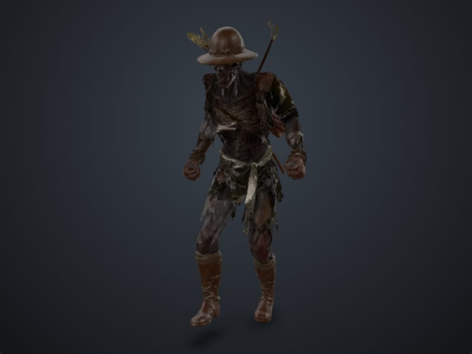
Un des quatre morts-vivants variés de la horde (D-234 (2)), fait à partir du mort-vivant (fiche voisine) : un archer de l'Ordre mort. Chapeau de fer à large bord, gambison déchiré, brassard, écharpe ivoire, bottes ; carquois de flèches brisées au dos. À 15 m dans la brume, on le reconnaît au bord du chapeau et aux flèches au-dessus des deux épaules.
Triangles
39 607 (comme le fichier validé)
Taille
1,72 m de haut ; 1,12 m d'une main à l'autre dans la pose de repos (bras écartés), 0,52 m d'avant en arrière. Le mort-vivant du projet mesure 1,75 m, le meneur 2,50 m.
Animations
8 : Mort (Death01, 3 s), Coup reçu (Hit_Chest, 0,42 s), Déséquilibre (Idle_Shield_Break, 1,08 s), Course (Jog_Fwd_Loop, 1,17 s), Marche (Walk_Loop, 1,67 s), Attente (Zombie_Idle_Loop, 1,33 s), Griffure (Zombie_Scratch, 1,79 s), Démarche lourde (Zombie_Walk_Fwd_Loop, 1,33 s). Les mêmes clés que le mort-vivant du jeu, tirées des mêmes animations Quaternius : Zombie_Scratch est l'attaque (griffure), Hit_Chest le coup reçu, Idle_Shield_Break le déséquilibre, Death01 la mort. Dans le jeu, le mort-vivant marche et court avec les animations du mannequin d'Unreal, qui n'existent pas hors d'Unreal : ici, Walk_Loop, Jog_Fwd_Loop et Zombie_Idle_Loop les remplacent, et Zombie_Walk_Fwd_Loop est une démarche lourde proposée. Sur place : c'est Unreal qui fera avancer la créature. Pieds jusqu'à 2,5 cm sous le sol, faute de calage dans cette page.
Défauts connus
Armes portées sur le corps, pas en main : les animations du mort-vivant sont à mains nues. Des armes en main seraient des modèles à part, tenus par la main dans Unreal, avec des animations armées (ticket à part).
La main droite traverse le bord du chapeau : à une image de la griffure (image 15 sur 44), la main, le pouce et l'avant-bras droits passent dans le bord du chapeau, et à la chute (Death01, images 32 et 33) l'avant-bras droit, jusqu'à 6,8 cm. Net à 1 m, illisible à 4 m. Le corriger demande de réduire ou de relever le bord du chapeau, qui est sa marque à 15 m.
Couché sur le dos (Death01), le carquois passe jusqu'à 12,2 cm sous le sol (le mort-vivant du projet : 13,9 cm). Relever le corps le ferait flotter.
À la marche, une jambe frôle l'autre (0,9 cm, 3 images sur 41).
Peau un peu plus rouge que celle du mort-vivant (#2F241E, 20° contre 29°), et lueur des yeux retirée de la texture : si elle est voulue, elle se fera dans le matériau d'Unreal.
Décisions
Du directeur, qui ont fait ce modèle :
Des morts-vivants variés dans la horde de 20 : soldats et déserteurs morts, avec des armures, des armes et des silhouettes différentes, faits à partir du modèle existant (D-234 (2)).
Qualité améliorée dès la fabrication : génération en 1536 (piste C de l'étude de qualité) et chaîne de qualité des bêtes (piste A) (D-240 (1)) ; lancé le 07/10/2026 (D-250 (2)).
Questions ouvertes
Pour le directeur, non tranchées :
Garder ces variantes ou en refaire une (environ 0,3 % de la semaine), garder les armes au dos ou les mettre en main, choisir que faire de ce qui passe sous le sol à la mort (armes qui tombent, ou mort en avant), garder la teinte ou la ramener au brun du mort-vivant, remettre ou non la lueur des yeux, et dire que faire de la main qui traverse le bord du chapeau (défauts déclarés, D-235 (8)).
Fabrication, licences et fichiers
Fabrication
Image : celle du mort-vivant du projet, éditée par FLUX.2 [klein] 4B, en local : même corps, même visage, même peau, même pose ; seuls l'armure, l'arme et la coiffe changent ; retenue : graine 1 ; lueur des yeux adoucie ; détourage BiRefNet (rembg).
3D : TRELLIS.2 en 1536 (piste C, D-240), graine 42 ; maillage de jeu de 39 607 triangles ; relief cuit depuis une version à 400 000 faces.
Squelette : copie de celui du mort-vivant (53 os, mêmes noms, même ordre, mêmes parents, même rotation de repos) ; seules les longueurs changent (UniRig ne sert que de repères) ; à la liaison, bras écartés de 10° de plus et épaules suivies à 50 % par le bras, ce qui réduit les traversées.
Animations : les 8 du mort-vivant et du meneur (Quaternius), mêmes clés de rotation, une clé par image (24 par seconde), boucles fermées ; pieds : bassin relevé image par image, pour qu'aucun point ne passe plus de 2,5 cm sous le sol (méthode de la correction 1 de T-0153) ; Death01 : pieds seuls.
Qualité, piste A (D-240 (1)) : zones de matière (chapeau, écharpe, carquois, gambison, brassard, bottes) et peau ; détail de matière, rugosité par matière, occlusion ; métal sur l'armure seulement (moyenne 0,023) ; violet de la lueur des yeux, étalé par TRELLIS.2 sur le visage, ramené au brun de la peau ; bleu nuit dans le dos et sur le carquois, absent de l'image de départ, ramené au brun voisin (correction 1) ; aucun noir plus sombre que #1E1E1E (bible, § 5 : ni poils ni crins noirs de bête, D-240 (2)).
Licences
Image de base : celle du mort-vivant, faite avec l'outil d'images d'OpenAI (Codex) ; comme pour le mort-vivant, ses conditions d'usage n'ont pas été relues pour cette page et restent à vérifier. · FLUX.2 [klein] 4B : Apache-2.0 · TRELLIS.2 : MIT (avec DINOv3, usage commercial permis) · rembg et BiRefNet : MIT · UniRig : MIT (repères seulement) · animations de Quaternius (Universal Animation Library 1 et 2, celles du jeu) : CC0 1.0 · Blender (GPL) employé comme outil.
Pour cette page
Textures (couleur, relief, et occlusion, rugosité et métal dans une même image) réduites de 4 096 à 2 048 px, en JPEG. Le maillage est à facettes : ses normales ne sont pas stockées (même rendu, voir « Comment la page est faite »). Squelette et animations inchangés : clés d'animation identiques au bit près à celles du fichier validé (contrôle du 07/10/2026, comparer_anims.mjs). 7,5 Mo en 5 fichiers, au lieu de 77,1 Mo.
Fichier validé
E:\aaa-proto\essai\horde\morts-vivants\mv-archer\mv-archer.glb Détails : E:\aaa-proto\essai\horde\morts-vivants\LISEZMOI.md (les 4 variantes, contrôles et défauts) ; avis des vérificateurs dans T-0154
Mort-vivant déserteur
T-0154 · validé le 07/10/2026 (correction 1)
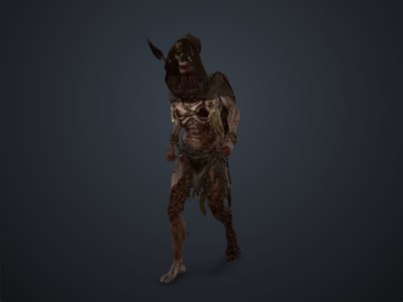
Un des quatre morts-vivants variés de la horde (D-234 (2)), fait à partir du mort-vivant (fiche voisine) : un déserteur de l'Ordre mort. Aucune armure : capuche et pèlerine, lambeaux du tabard sans or (bible, § 3.6), bandages, fer brisé au poignet, pieds nus ; la lance qui l'a tué est plantée dans son dos. À 15 m dans la brume, on le reconnaît à la capuche pointue et à la hampe en travers, au-dessus de l'épaule.
Triangles
44 204 (comme le fichier validé)
Taille
1,70 m de haut ; 0,97 m d'une main à l'autre dans la pose de repos (bras écartés), 0,44 m d'avant en arrière. Le mort-vivant du projet mesure 1,75 m, le meneur 2,50 m.
Animations
8 : Mort (Death01, 3 s), Coup reçu (Hit_Chest, 0,42 s), Déséquilibre (Idle_Shield_Break, 1,08 s), Course (Jog_Fwd_Loop, 1,17 s), Marche (Walk_Loop, 1,67 s), Attente (Zombie_Idle_Loop, 1,33 s), Griffure (Zombie_Scratch, 1,79 s), Démarche lourde (Zombie_Walk_Fwd_Loop, 1,33 s). Les mêmes clés que le mort-vivant du jeu, tirées des mêmes animations Quaternius : Zombie_Scratch est l'attaque (griffure), Hit_Chest le coup reçu, Idle_Shield_Break le déséquilibre, Death01 la mort. Dans le jeu, le mort-vivant marche et court avec les animations du mannequin d'Unreal, qui n'existent pas hors d'Unreal : ici, Walk_Loop, Jog_Fwd_Loop et Zombie_Idle_Loop les remplacent, et Zombie_Walk_Fwd_Loop est une démarche lourde proposée. Sur place : c'est Unreal qui fera avancer la créature. Pieds jusqu'à 2,5 cm sous le sol, faute de calage dans cette page.
Défauts connus
Armes portées sur le corps, pas en main : les animations du mort-vivant sont à mains nues. Des armes en main seraient des modèles à part, tenus par la main dans Unreal, avec des animations armées (ticket à part).
La main droite entre dans la jambe gauche pendant la griffure (images 17 à 24, un tiers de seconde ; 2,1 cm) : l'avant-bras, puis le pouce et les doigts glissent dans le genou et le tibia, enveloppés de lambeaux. Net à 1 m, illisible à 4 m.
Couché sur le dos (Death01), ce qu'il porte au dos passe jusqu'à 20,4 cm sous le sol (le mort-vivant du projet : 13,9 cm). Relever le corps le ferait flotter.
Ses lambeaux ivoire n'ont pas de matière propre : ils ont le détail de la peau. Quelques points bleus (1,3 cm²) et un vert très sombre aux épaules (27 cm²) ne se voient que de très près.
Peau un peu plus rouge que celle du mort-vivant (#37271F, 20° contre 29°), et lueur des yeux retirée de la texture : si elle est voulue, elle se fera dans le matériau d'Unreal.
Décisions
Du directeur, qui ont fait ce modèle :
Des morts-vivants variés dans la horde de 20 : soldats et déserteurs morts, avec des armures, des armes et des silhouettes différentes, faits à partir du modèle existant (D-234 (2)).
Qualité améliorée dès la fabrication : génération en 1536 (piste C de l'étude de qualité) et chaîne de qualité des bêtes (piste A) (D-240 (1)) ; lancé le 07/10/2026 (D-250 (2)).
Questions ouvertes
Pour le directeur, non tranchées :
Garder ces variantes ou en refaire une (environ 0,3 % de la semaine), garder les armes au dos ou les mettre en main, choisir que faire de ce qui passe sous le sol à la mort (armes qui tombent, ou mort en avant), garder la teinte ou la ramener au brun du mort-vivant, remettre ou non la lueur des yeux, et dire que faire de la main qui entre dans la jambe à la griffure (défauts déclarés, D-235 (8)).
Fabrication, licences et fichiers
Fabrication
Image : celle du mort-vivant du projet, éditée par FLUX.2 [klein] 4B, en local : même corps, même visage, même peau, même pose ; seuls l'armure, l'arme et la coiffe changent ; retenue : graine 2 ; lueur des yeux adoucie ; détourage BiRefNet (rembg).
3D : TRELLIS.2 en 1536 (piste C, D-240), graine 42 ; maillage de jeu de 44 204 triangles ; relief cuit depuis une version à 400 000 faces.
Squelette : copie de celui du mort-vivant (53 os, mêmes noms, même ordre, mêmes parents, même rotation de repos) ; seules les longueurs changent (UniRig ne sert que de repères) ; à la liaison, bras écartés de 10° de plus et épaules suivies à 50 % par le bras, ce qui réduit les traversées.
Animations : les 8 du mort-vivant et du meneur (Quaternius), mêmes clés de rotation, une clé par image (24 par seconde), boucles fermées ; pieds : bassin relevé image par image, pour qu'aucun point ne passe plus de 2,5 cm sous le sol (méthode de la correction 1 de T-0153) ; Death01 : pieds seuls.
Qualité, piste A (D-240 (1)) : zones de matière (lambeaux, capuche, hampe) et peau ; détail de matière, rugosité par matière, occlusion ; métal sur l'armure seulement (aucun métal : pas d'armure) ; violet de la lueur des yeux, étalé par TRELLIS.2 sur le visage, ramené au brun de la peau ; rouge vif de la lueur des yeux, étalé sur la capuche, le cou, les épaules et les orbites, ramené au brun de la capuche (correction 1) ; aucun noir plus sombre que #1E1E1E (bible, § 5 : ni poils ni crins noirs de bête, D-240 (2)).
Licences
Image de base : celle du mort-vivant, faite avec l'outil d'images d'OpenAI (Codex) ; comme pour le mort-vivant, ses conditions d'usage n'ont pas été relues pour cette page et restent à vérifier. · FLUX.2 [klein] 4B : Apache-2.0 · TRELLIS.2 : MIT (avec DINOv3, usage commercial permis) · rembg et BiRefNet : MIT · UniRig : MIT (repères seulement) · animations de Quaternius (Universal Animation Library 1 et 2, celles du jeu) : CC0 1.0 · Blender (GPL) employé comme outil.
Pour cette page
Textures (couleur, relief, et occlusion, rugosité et métal dans une même image) réduites de 4 096 à 2 048 px, en JPEG. Le maillage est à facettes : ses normales ne sont pas stockées (même rendu, voir « Comment la page est faite »). Squelette et animations inchangés : clés d'animation identiques au bit près à celles du fichier validé (contrôle du 07/10/2026, comparer_anims.mjs). 7,1 Mo en 5 fichiers, au lieu de 73,1 Mo.
Fichier validé
E:\aaa-proto\essai\horde\morts-vivants\mv-deserteur\mv-deserteur.glb Détails : E:\aaa-proto\essai\horde\morts-vivants\LISEZMOI.md (les 4 variantes, contrôles et défauts) ; avis des vérificateurs dans T-0154
Mort-vivant sergent
T-0154 · validé le 07/10/2026 (correction 1)
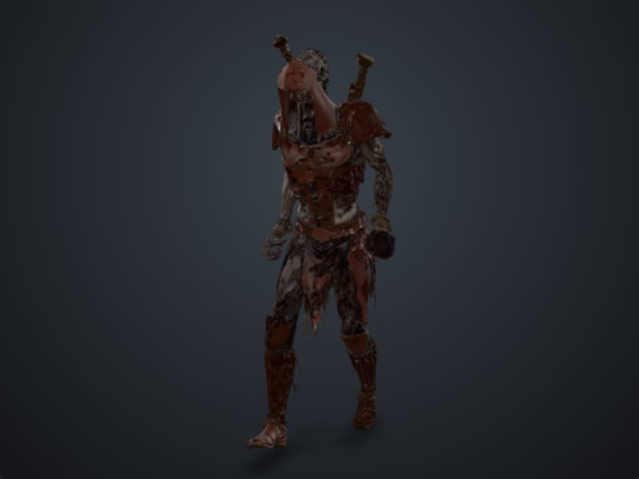
Un des quatre morts-vivants variés de la horde (D-234 (2)), fait à partir du mort-vivant (fiche voisine) : un sergent de l'Ordre mort. Heaume à camail, cuirasse et spalières rouillées, jambières ; deux épées croisées au dos. À 15 m dans la brume, on le reconnaît aux deux poignées au-dessus des épaules et à ses épaules larges.
Triangles
42 114 (comme le fichier validé)
Taille
1,82 m de haut ; 1,20 m d'une main à l'autre dans la pose de repos (bras écartés), 0,52 m d'avant en arrière. Le mort-vivant du projet mesure 1,75 m, le meneur 2,50 m.
Animations
8 : Mort (Death01, 3 s), Coup reçu (Hit_Chest, 0,42 s), Déséquilibre (Idle_Shield_Break, 1,08 s), Course (Jog_Fwd_Loop, 1,17 s), Marche (Walk_Loop, 1,67 s), Attente (Zombie_Idle_Loop, 1,33 s), Griffure (Zombie_Scratch, 1,79 s), Démarche lourde (Zombie_Walk_Fwd_Loop, 1,33 s). Les mêmes clés que le mort-vivant du jeu, tirées des mêmes animations Quaternius : Zombie_Scratch est l'attaque (griffure), Hit_Chest le coup reçu, Idle_Shield_Break le déséquilibre, Death01 la mort. Dans le jeu, le mort-vivant marche et court avec les animations du mannequin d'Unreal, qui n'existent pas hors d'Unreal : ici, Walk_Loop, Jog_Fwd_Loop et Zombie_Idle_Loop les remplacent, et Zombie_Walk_Fwd_Loop est une démarche lourde proposée. Sur place : c'est Unreal qui fera avancer la créature. Pieds jusqu'à 2,5 cm sous le sol, faute de calage dans cette page.
Défauts connus
Armes portées sur le corps, pas en main : les animations du mort-vivant sont à mains nues. Des armes en main seraient des modèles à part, tenus par la main dans Unreal, avec des animations armées (ticket à part).
Couché sur le dos (Death01), la poignée des épées passe jusqu'à 40 cm sous le sol (le mort-vivant du projet : 13,9 cm). Relever le corps le ferait flotter. À 8 m, on voit une poignée dressée près de l'épaule gauche.
L'image devait donner une seule grande spalière et une seule épée (silhouette asymétrique) : elle en a donné deux de chaque, gardées, car la silhouette reste la plus distincte des quatre.
Peau un peu plus rouge que celle du mort-vivant (#3A2C28, 16° contre 29°), et lueur des yeux retirée de la texture : si elle est voulue, elle se fera dans le matériau d'Unreal.
Décisions
Du directeur, qui ont fait ce modèle :
Des morts-vivants variés dans la horde de 20 : soldats et déserteurs morts, avec des armures, des armes et des silhouettes différentes, faits à partir du modèle existant (D-234 (2)).
Qualité améliorée dès la fabrication : génération en 1536 (piste C de l'étude de qualité) et chaîne de qualité des bêtes (piste A) (D-240 (1)) ; lancé le 07/10/2026 (D-250 (2)).
Questions ouvertes
Pour le directeur, non tranchées :
Garder ces variantes ou en refaire une (environ 0,3 % de la semaine), garder les armes au dos ou les mettre en main, choisir que faire de ce qui passe sous le sol à la mort (armes qui tombent, ou mort en avant), garder la teinte ou la ramener au brun du mort-vivant, remettre ou non la lueur des yeux, et dire que faire de ses deux spalières et de ses deux épées, au lieu d'une seule de chaque (défauts déclarés, D-235 (8)).
Fabrication, licences et fichiers
Fabrication
Image : celle du mort-vivant du projet, éditée par FLUX.2 [klein] 4B, en local : même corps, même visage, même peau, même pose ; seuls l'armure, l'arme et la coiffe changent ; retenue : graine 5 ; lueur des yeux adoucie ; détourage BiRefNet (rembg).
3D : TRELLIS.2 en 1536 (piste C, D-240), graine 42 ; maillage de jeu de 42 114 triangles ; relief cuit depuis une version à 400 000 faces.
Squelette : copie de celui du mort-vivant (53 os, mêmes noms, même ordre, mêmes parents, même rotation de repos) ; seules les longueurs changent (UniRig ne sert que de repères) ; à la liaison, bras écartés de 10° de plus et épaules suivies à 50 % par le bras, ce qui réduit les traversées. Pouces et auriculaires placés d'après le mort-vivant : UniRig ne les avait pas trouvés.
Animations : les 8 du mort-vivant et du meneur (Quaternius), mêmes clés de rotation, une clé par image (24 par seconde), boucles fermées ; pieds : bassin relevé image par image, pour qu'aucun point ne passe plus de 2,5 cm sous le sol (méthode de la correction 1 de T-0153) ; Death01 : pieds seuls.
Qualité, piste A (D-240 (1)) : zones de matière (heaume, épées, cuirasse, ceinture, jambières) et peau ; détail de matière, rugosité par matière, occlusion ; métal sur l'armure seulement (moyenne 0,086) ; violet de la lueur des yeux, étalé par TRELLIS.2 sur le visage, ramené au brun de la peau ; aucun noir plus sombre que #1E1E1E (bible, § 5 : ni poils ni crins noirs de bête, D-240 (2)).
Licences
Image de base : celle du mort-vivant, faite avec l'outil d'images d'OpenAI (Codex) ; comme pour le mort-vivant, ses conditions d'usage n'ont pas été relues pour cette page et restent à vérifier. · FLUX.2 [klein] 4B : Apache-2.0 · TRELLIS.2 : MIT (avec DINOv3, usage commercial permis) · rembg et BiRefNet : MIT · UniRig : MIT (repères seulement) · animations de Quaternius (Universal Animation Library 1 et 2, celles du jeu) : CC0 1.0 · Blender (GPL) employé comme outil.
Pour cette page
Textures (couleur, relief, et occlusion, rugosité et métal dans une même image) réduites de 4 096 à 2 048 px, en JPEG. Le maillage est à facettes : ses normales ne sont pas stockées (même rendu, voir « Comment la page est faite »). Squelette et animations inchangés : clés d'animation identiques au bit près à celles du fichier validé (contrôle du 07/10/2026, comparer_anims.mjs). 8,3 Mo en 5 fichiers, au lieu de 82,4 Mo.
Fichier validé
E:\aaa-proto\essai\horde\morts-vivants\mv-sergent\mv-sergent.glb Détails : E:\aaa-proto\essai\horde\morts-vivants\LISEZMOI.md (les 4 variantes, contrôles et défauts) ; avis des vérificateurs dans T-0154
Esprit
T-0056 · validé le 30/09/2026
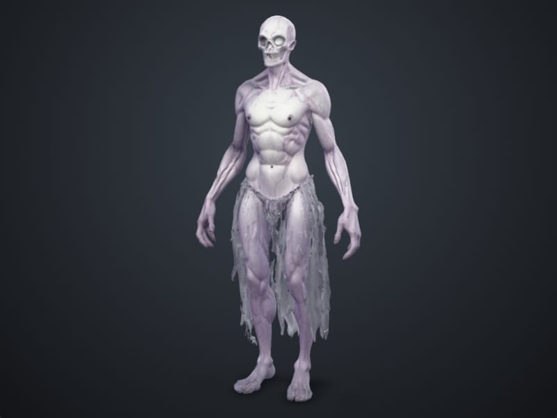
Pas d'animation dans ce modèle.
Créature du prototype, d'après une entrée refaite (« v4 ») : un corps dense et mat, plus facile à convertir que la fumée lumineuse de la fiche.
Triangles
58 596 (comme le fichier validé)
Taille
1,80 m.
Animations
Aucune dans le fichier validé (squelette prêt pour le reciblage dans Unreal).
Défauts connus
Plus « solide » que la fiche de fumée (corps dense, pieds visibles) : à valider par le directeur.
L'aspect spectral (matériau translucide ou émissif lilas pâle, particules de brume) reste à faire dans Unreal : il n'est pas dans ce modèle.
Pas d'os de torsion.
Fabrication, licences et fichiers
Fabrication
Image : refaite avec FLUX.2 [klein] 4B (graine 1). La fiche d'origine, une fumée lumineuse, donnait un modèle bleu-noir.
3D : TRELLIS.2 (graine 42), surface simple d'environ 59 000 triangles ; relief cuit depuis une version à 290 000 faces.
Squelette UniRig de 53 os aux noms du mannequin UE5 ; poids de Blender, corrigés pour que la brume près des mains ne suive pas les bras.
Licences
FLUX.2 [klein] 4B : Apache-2.0 · TRELLIS.2 : MIT (avec DINOv3, usage commercial permis) · rembg et BiRefNet : MIT · UniRig : MIT · Blender (GPL) employé comme outil.
Pour cette page
Squelette retiré (pas d'animation), pose de référence en A. Relief : carte OpenGL. Textures en JPEG. 3,9 Mo en 5 fichiers, au lieu de 22,9 Mo.
Squelette UniRig de 35 os (avec root) aux noms du mannequin UE5 ; poids de Blender corrigés autour des bras ; aucun sommet sur root.
Licences
Fiche d'entrée : image faite avec l'outil d'images d'OpenAI (Codex), d'après personnages\LISEZMOI.md ; ses conditions d'usage n'ont pas été relues pour cette page et restent à vérifier. · TRELLIS.2 : MIT (avec DINOv3, usage commercial permis) · rembg et BiRefNet : MIT · UniRig : MIT · Blender (GPL) employé comme outil.
Pour cette page
Squelette retiré (pas d'animation), pose de référence en A. Relief : carte OpenGL. Textures en JPEG. 6,1 Mo en 5 fichiers, au lieu de 26,8 Mo.
T-0058 · validé le 30/09/2026 (refait bras écartés)
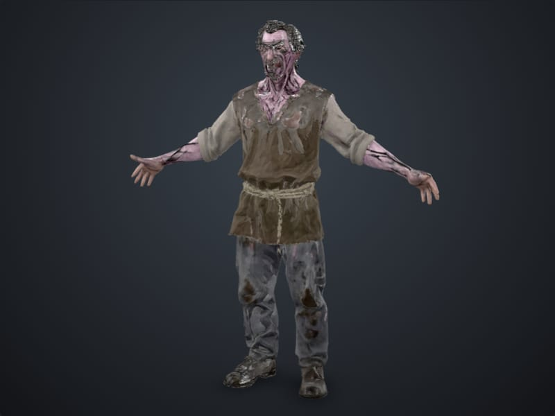
Pas d'animation dans ce modèle.
Le paysan possédé sur lequel tire la patrouille de l'Ordre au didacticiel (D-03, Design du Didacticiel) : veines noires sur le cou, le visage et les bras.
Triangles
52 325 (comme le fichier validé)
Taille
1,75 m.
Animations
Aucune dans le fichier validé (squelette prêt pour le reciblage dans Unreal).
Défauts connus
Tenue de paysan inventée : à valider par le directeur.
Visage peu détaillé ; la lueur des yeux est perdue (à ajouter en émissif s'il est vu de près).
Pose de référence en T souple, alors que les autres sont en A : à régler au reciblage.
Fabrication, licences et fichiers
Fabrication
Image : faite en local avec FLUX.2 [klein] 4B, puis refaite bras écartés du corps (personnages\possede-poseT.png).
3D : TRELLIS.2 (graine 7), 52 300 triangles ; relief cuit ; couleur étalonnée sur l'image (peau gris pâle).
Squelette UniRig de 53 os (avec root, doigts compris) ; poids d'UniRig corrigés (le calcul de Blender échouait sur ce maillage).
Licences
FLUX.2 [klein] 4B : Apache-2.0 · TRELLIS.2 : MIT (avec DINOv3, usage commercial permis) · rembg et BiRefNet : MIT · UniRig : MIT · Blender (GPL) employé comme outil.
Pour cette page
Squelette retiré (pas d'animation), pose de référence en T souple. Relief : carte OpenGL. Textures en JPEG. 6,3 Mo en 5 fichiers, au lieu de 26,9 Mo.
La silhouette de l'Ange Déchu, pour son apparition éclair de 0,5 s au didacticiel (Design du Didacticiel, étape 3 : « ailes d'ombre brisées, trois paires d'yeux dorés »). C'est une base pour les effets, pas un personnage animé.
Triangles
59 601 (comme le fichier validé)
Taille
3,60 m de haut, 2,58 m d'envergure.
Animations
Aucune : silhouette statique.
Défauts connus
La fumée noire de la fiche sort gris ardoise : le générateur ne la rend pas.
Les trois paires d'yeux dorés ne sont pas dans la texture : elles sont à placer en effets au visage.
Le rendu voulu (matériau sombre et émissif, fumée et cendres, dissolution en 0,5 s) reste à faire dans Unreal.
Fabrication, licences et fichiers
Fabrication
Image : fiche personnages\ange-dechu.png (validée au 2ᵉ essai), faite avec Codex, l'outil d'images d'OpenAI, le 29/09/2026 (personnages\LISEZMOI.md) ; détourée avec sa fumée.
3D : TRELLIS.2 (graine 42), surface simple de 59 600 triangles, métal mis à 0.
Maillage statique, sans squelette ; pivot au centre de la base.
Licences
Fiche d'entrée : image faite avec l'outil d'images d'OpenAI (Codex), d'après personnages\LISEZMOI.md ; ses conditions d'usage n'ont pas été relues pour cette page et restent à vérifier. · TRELLIS.2 : MIT (avec DINOv3, usage commercial permis) · rembg et BiRefNet : MIT · Blender (GPL) employé comme outil.
Pour cette page
Textures en JPEG ; maillage inchangé. 3,7 Mo en 4 fichiers, au lieu de 12,9 Mo.
La tenue du héros au réveil (D-163) : gambison matelassé déchiré, pantalon, bottes. Montrée seule, sans le corps, car le corps du héros est un MetaHuman.
Triangles
84 576 (comme le fichier validé)
Taille
Environ 1,57 m, du col aux semelles (sur un corps de 1,80 m).
Animations
Aucune : dans le jeu, la tenue suit le squelette du corps.
Défauts connus
Le gambison descend à mi-cuisse ; celui de la fiche s'arrête aux hanches.
Les bandes molletières de la fiche manquent au pantalon.
Bras levés au-delà de l'horizontale, l'épaule du gambison s'étire.
Un point d'environ 1 cm au talon des bottes, visible seulement pied levé, vu de dessous.
Fabrication, licences et fichiers
Fabrication
Images : FLUX.2 [klein] 4B ; le gambison est refait en pose A d'après un rendu du corps du héros.
3D : TRELLIS.2 avec remaillage (coque épaisse, qu'on peut enfiler) : gambison 38 500 triangles, pantalon 23 100, bottes 2 × 11 500.
Ajustée sur le corps du héros dans Blender (repères, manches dépliées, coque poussée hors du corps) ; couleur du gambison étalonnée sur la fiche ; poids recopiés du corps.
Licences
FLUX.2 [klein] 4B : Apache-2.0 · TRELLIS.2 : MIT (avec DINOv3, usage commercial permis) · Blender (GPL) employé comme outil.
Pour cette page
Les trois pièces sont réunies dans un seul fichier. Le squelette du MetaHuman (342 os) est retiré : la tenue reste dans sa pose de référence (pose A), sans aucune donnée MetaHuman. Textures en JPEG. 6,6 Mo en 8 fichiers, au lieu de 33,2 Mo.
L'épée rouillée trouvée dans les ruines au réveil (D-163), pour le combat.
Triangles
19 904 (comme le fichier validé)
Taille
1,10 m.
Animations
Aucune : objet.
Défauts connus
Aucun défaut signalé à la validation.
Fabrication, licences et fichiers
Fabrication
Image : découpée de la fiche du héros personnages\heros-reveil.png, faite avec Codex, l'outil d'images d'OpenAI, le 29/09/2026 (personnages\LISEZMOI.md).
3D : TRELLIS.2, 19 900 triangles.
Rouille refaite en 3D comme sur la fiche : plaques et piqûres sur la lame, la garde et le pommeau, métal plus faible et surface plus rugueuse dans la rouille.
Pivot au centre de la poignée, lame vers le haut.
Licences
Fiche d'entrée : image faite avec l'outil d'images d'OpenAI (Codex), d'après personnages\LISEZMOI.md ; ses conditions d'usage n'ont pas été relues pour cette page et restent à vérifier. · TRELLIS.2 : MIT (avec DINOv3, usage commercial permis) · rembg et BiRefNet : MIT · Blender (GPL) employé comme outil.
Pour cette page
Textures en JPEG ; maillage inchangé. 1,6 Mo en 4 fichiers, au lieu de 7,7 Mo.
La corde est un simple cylindre : pour qu'elle se tende, il faudra la remplacer par un câble dans le moteur.
Fabrication, licences et fichiers
Fabrication
Image : découpé sur la fiche personnages\soldat-ordre.png, faite avec Codex, l'outil d'images d'OpenAI, le 29/09/2026 (personnages\LISEZMOI.md) ; détouré.
3D : TRELLIS.2, 11 800 triangles.
Corde ajoutée : un cylindre de 2 mm (le modèle généré n'en avait pas). Pivot au centre de la poignée.
Licences
Fiche d'entrée : image faite avec l'outil d'images d'OpenAI (Codex), d'après personnages\LISEZMOI.md ; ses conditions d'usage n'ont pas été relues pour cette page et restent à vérifier. · TRELLIS.2 : MIT (avec DINOv3, usage commercial permis) · rembg et BiRefNet : MIT · Blender (GPL) employé comme outil.
Pour cette page
Textures en JPEG ; maillage inchangé. 1,0 Mo en 4 fichiers, au lieu de 7,2 Mo.
Le bouclier rond du soldat de l'Ordre, d'après sa fiche.
Triangles
11 709 (comme le fichier validé)
Taille
0,75 m de diamètre.
Animations
Aucune : objet.
Défauts connus
La poignée au dos est inventée par le générateur.
Fabrication, licences et fichiers
Fabrication
Image : découpé sur la fiche personnages\soldat-ordre.png, faite avec Codex, l'outil d'images d'OpenAI, le 29/09/2026 (personnages\LISEZMOI.md) ; détouré (génération relancée une fois).
3D : TRELLIS.2, 11 700 triangles ; pivot au centre.
Licences
Fiche d'entrée : image faite avec l'outil d'images d'OpenAI (Codex), d'après personnages\LISEZMOI.md ; ses conditions d'usage n'ont pas été relues pour cette page et restent à vérifier. · TRELLIS.2 : MIT (avec DINOv3, usage commercial permis) · rembg et BiRefNet : MIT · Blender (GPL) employé comme outil.
Pour cette page
Textures en JPEG ; maillage inchangé. 1,5 Mo en 4 fichiers, au lieu de 10,3 Mo.
T-0123 · validé le 02/10/2026 (correction 2) ; marches boiteuses ajoutées le 02/10/2026 (T-0128, D-225, D-227) ; qualité améliorée le 06/10/2026 (T-0145, D-240)
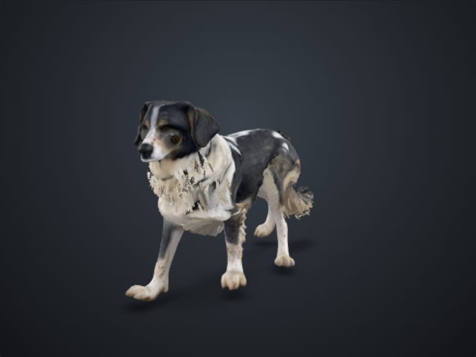
Le vieux chien de l'éleveur, compagnon de l'issue 2 de « L'Agneau et le Loup » (D-213 (2), D-215 (2), D-223) : chien de ferme de type colley, robe pie noir et blanc passée, museau gris, oreilles tombantes, collier de cuir gardé (D-225 (1)) ; « il est vieux, mais il a du flair » (ELV-60). Son rôle en combat suit sa loyauté (D-224), paliers à 35 et 70 (D-225 (3)) ; blessé, il boite de la patte touchée, deux pattes au plus (D-225 (2), D-227 (4)) ; il ne meurt pas définitivement : il se met à l'abri et revient après un repos (D-227 (3)).
Triangles
64 510 (comme le fichier validé)
Taille
0,95 m de long, queue comprise (0,97 m avec les poils de la queue) ; garrot à 0,54 m (le loup : 0,77 m) ; 0,63 m au sommet de la tête ; 0,29 m de large.
Animations
21 : Attaque (Attack, 1,33 s), Aboiement (Bark, 1,25 s), Mort (Death, 1,08 s), Mange (Eating, 2,54 s), Galop (Gallop, 0,58 s), Saut au galop (Gallop_Jump, 0,92 s), Attente (Idle, 3,33 s), Attente 2 (Idle_2, 3,33 s), Attente, tête basse (Idle_2_HeadLow, 4 s), Touché 1 (Idle_HitReact1, 0,67 s), Touché 2 (Idle_HitReact2, 0,67 s), Saut puis arrêt (Jump_ToIdle, 1,33 s), S'assoit (Sit_Down, 1 s), Assis (Sit_Idle, 3 s), Se relève (Sit_Up, 0,83 s), Trot (Trot, 0,58 s), Marche (Walk, 1,08 s), Marche blessé (boite de l'avant gauche) (Walk_Limp, 1,33 s), Marche blessé (boite de l'arrière gauche) (Walk_Limp_Arriere, 1,33 s), Marche blessé (boite de l'arrière droite) (Walk_Limp_ArriereDroit, 1,33 s), Marche blessé (boite de l'avant droite) (Walk_Limp_AvantDroit, 1,33 s). Sur place : dans le jeu, c'est Unreal qui fera avancer le chien (marche 0,45 m/s, trot 1,0 m/s, galop 2 m/s, marches boiteuses 0,3 m/s). Marches boiteuses : une par patte, car la patte qui boite suit la blessure (D-227 (4)). La patte blessée a un appui court et se lève plus haut ; à l'avant, la tête se relève quand elle porte ; à l'arrière, la hanche du côté blessé se relève. Deux pattes au plus boitent en même temps : le jeu combinera deux de ces animations dans Unreal (T-0132).
Défauts connus
De très près, ce n'est pas encore du niveau d'un jeu AAA (T-0145) : poil fait par programme, sans épi ni remous. De près, et déjà à la distance de cette visionneuse, le jabot du poitrail se lit comme des franges, et des cartes plus sombres se détachent sur le blanc ; de plus loin, à distance de jeu, il se lit comme le jabot d'un colley.
Des cartes de poils entrent un peu dans la peau : elles suivent les os, sans physique ; dans les plis (cou baissé, assis, Attack), jusqu'à 2 cm, sur 2 % de leurs sommets au pire instant. Le bout de la queue passe jusqu'à 0,8 cm sous le sol dans Attack et frôle le sol assis.
Au galop et aux sauts, le pied entier tourne de 10° au plus en vol et penche de 21° au plus sur le côté ; c'est dû à l'adaptation du squelette. Appuis très courts : les pieds glissent quand ils se posent et se lèvent.
Walk (animation du pack, comme le loup) : en fin d'appui, un pied posé avance au sol, jusqu'à 3,1 cm par image.
Yeux peints dans la texture : de près, ils font « dessinés » et restent mats ; le disque gris autour se voit un peu.
Gueule : un intérieur sombre, sans dents ni langue, et une mâchoire inférieure mince ; de profil, gueule ouverte, on voit encore le fond entre le bout des deux lèvres.
Assis : pieds arrière posés de travers (le squelette n'a pas d'os d'orteils) ; de trois quarts, la patte arrière se lit mal.
Dents de scie à l'arrière des avant-bras (franges de poil devenues un peigne dans la géométrie, visibles jusque dans la silhouette) et plis cassés à la collerette ; quelques traînées claires sous le ventre.
Oreilles rigides : elles ne ballottent pas au galop.
Trot fait ici : correct de loin, moins souple qu'une vraie capture de mouvement, foulée courte (23 cm). Galop un peu ramassé, mort raide, attaque de loup : animations du pack.
Marches boiteuses faites ici (T-0128) : correctes de loin, moins souples qu'une vraie capture de mouvement ; quand un pied se pose, ses sommets avancent d'1 mm au plus. Le chien n'étant pas symétrique, les versions droites ne sont pas un miroir exact des gauches : même calcul, patte blessée à droite.
Longueur du museau à la croupe : 1,41 fois la hauteur au garrot (un vrai chien de berger est vers 1,5).
Fabrication, licences et fichiers
Fabrication
Images : FLUX.2 [klein] 4B, en local (graine 1 retenue pour l'allure), puis retouchée pour écarter la queue des cuisses (graine 4) ; détourage BiRefNet.
Retouche dans Blender : tête redressée, tronc allongé de 12 %, peau refaite d'une seule pièce (remaillage de 6 mm), 60 000 triangles, couleur cuite sans le métal de TRELLIS.2, relief recuit ; yeux peints dans la texture ; gueule qui s'ouvre (os de mâchoire et intérieur sombre).
Squelette du loup du pack Quaternius (40 os avec la mâchoire) et 12 de ses animations, adaptés au corps ; 9 animations faites ici (trot, s'assoit, assis, se relève, aboiement, et quatre marches boiteuses, une par patte) ; pieds calés au sol, boucles sans saut ; trot et marches boiteuses aux pieds verrouillés sur un sol qui défile.
Qualité (T-0145, D-240 (1)), le 06/10/2026 : dépliage resserré (41 à 59 % de la texture) ; détail de poil orienté cuit dans la couleur et le relief, rugosité par matière et occlusion ; poils en cartes : 200 à la queue et 220 au jabot du poitrail (4 200 triangles), en 6 teintes prises dans la fiche (« pie noir et blanc passée, feu, museau gris ») et dans la peau livrée, qui suivent le squelette, boiterie comprise ; aucun noir plus sombre que #0C0C0C (D-240 (2)). Forme, squelette, gueule et animations inchangés (écart 0,000 cm à chaque image) ; couleur gardée (0,999 de la précédente).
Licences
FLUX.2 [klein] 4B : Apache-2.0 · TRELLIS.2 : MIT (avec DINOv3, usage commercial permis) · rembg et BiRefNet : MIT · squelette et 12 animations Quaternius (Ultimate Animated Animal Pack) : CC0 · trot, position assise, aboiement, marches boiteuses, gueule et yeux : faits par programme (T-0123, T-0128) · détail de poil et cartes de poils : faits par programme (T-0145) · Blender (GPL) employé comme outil.
Pour cette page
Textures du corps (couleur, relief, occlusion et rugosité) réduites de 4 096 à 2 048 px, en JPEG. Texture des cartes de poils gardée en PNG, telle quelle (chien-berger_poils.png, 3 072 × 2 048 px), pour sa transparence. Les trois matériaux (corps, intérieur de la gueule, cartes) sont gardés ; l'intérieur de la gueule, à facettes, ne garde pas ses normales (même rendu, voir « Comment la page est faite »). Maillage, squelette et animations inchangés : clés d'animation identiques au bit près à celles du fichier validé (contrôle du 06/10/2026, comparer_anims.mjs). 7,1 Mo en 6 fichiers, au lieu de 46,0 Mo.
Fichier validé
E:\aaa-proto\essai\chien\chien.glb Détails : E:\aaa-proto\essai\chien\LISEZMOI.md ; avis des vérificateurs dans T-0123 et T-0145 ; version précédente dans avant-qualite\
Araignée géante
T-0133 · validé le 02/10/2026 (correction 1) ; qualité améliorée le 06/10/2026 (T-0149, D-240)
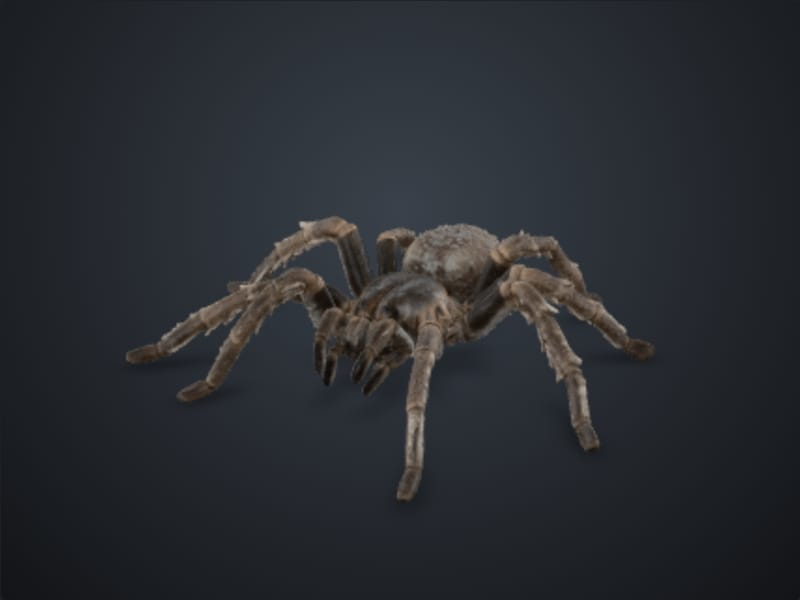
La bête de combat des galeries de la mine (D-220), avec les morts-vivants de mineurs et Brutus au fond (D-216 (8)) : grande araignée chasseuse au sol, de type mygale ou lycose (pas de toile), gris-brun et terre d'ombre, pattes velues à bandes sombres, petits yeux noirs sans lueur (bible artistique, § 6.5). Au sol seulement, par 1 ou 2 (proposition de groupes-ennemis.md, § 3.3).
Triangles
57 089 (comme le fichier validé)
Taille
Taille proposée, encore à trancher par le directeur : 2,50 m de large pattes comprises, 2,43 m de long, 0,61 m de haut au sommet de l'abdomen ; corps de 1,26 m (céphalothorax 0,65 m, abdomen 0,61 m). Elle passe dans une galerie de 3 m.
Animations
7 : Attaque (Attack, 1,17 s), Mort (Death, 1,92 s), Réaction au coup (Hit, 0,67 s), Attente (Idle, 2 s), Bond (Leap, 1,42 s), Course (Run, 0,38 s), Marche (Walk, 1 s). Faites par programme, à 24 images par seconde. Sur place : dans le jeu, c'est Unreal qui fera avancer l'araignée (marche 0,51 m/s, course 2,05 m/s) et qui donnera sa distance au bond (2 à 3 m). « Blessée » est rendue par une réaction au coup (Hit). Attack : elle se cabre, frappe et mord. Death : elle reste couchée.
Défauts connus
De très près, ce n'est pas encore du niveau d'un jeu AAA (D-235 (9), T-0149) : le détail ajouté par programme imite la matière sans l'usure ni les épis qu'un artiste dessinerait, et la couleur d'origine (TRELLIS.2) reste molle ; les poils des pattes restent des touffes sculptées ; les yeux n'ont pas de matière propre (reflet de la chitine) et rien ne luit ; un seul crochet brille : le chélicère droit, soudé au pédipalpe droit, garde la chitine.
Moignon de la 9e patte : la patte en trop était déjà dans l'image FLUX.2 retenue (5 pattes sur le flanc gauche de la bête), et TRELLIS.2 l'a reproduite. Elle est retirée, mais il reste une bosse sur le flanc gauche, près de la racine des pattes 2 et 3. Refaire la 3D avec la même image redonnerait la patte : il faudrait une autre image, à 8 pattes. Non touché par la mise à niveau de qualité (T-0149) : ce défaut sera corrigé plus tard (D-235 (8)).
Pattes qui se touchent : dans Run, contacts brefs entre pattes voisines, sur une dizaine de demi-images, de 2 à 5,5 cm de profondeur selon la mesure ; dans Death, les pattes 2 et 3 gauches entrent l'une dans l'autre en se repliant (6 cm environ). Dans Walk, contact négligeable (moins d'1 cm). Cause : des pattes générées épaisses et serrées à la racine.
Peau étirée à la racine des pattes avant et des pédipalpes, sous l'avant du corps (pas entre les pattes) : 892 cm² au pire dans Run, 350 environ dans Walk et Death.
Chélicères et pédipalpes soudés dans le modèle généré : ils bougent peu (19° au plus), pour ne pas déchirer la peau ; la morsure se lit surtout par l'élan du corps.
Bête sombre (segments de pattes presque noirs) : dans la vraie obscurité des galeries (bible artistique, § 4), elle risque de mal se lire. Ce n'est pas un défaut de cuisson : sa teinte est celle du modèle généré. La chitine lui donne maintenant des reflets (T-0149).
Dans la pose de liaison, des pieds restent de 0 à 4 cm au-dessus du sol (ils sont posés dans toutes les animations). Bond sur place ; aucune marche aux parois ni au plafond.
9 petits triangles isolés en plus de la peau (0,01 à 0,62 cm², dont un à 5,5 cm de la 3e patte droite), invisibles sur les rendus.
Décisions
Tranché par le directeur le 06/10/2026 :
Taille gardée : 2,50 m de large, corps de 1,26 m (D-235 (1)).
Combat : morsure et venin, toile, saut à distance ; pas sur les parois ni au plafond (D-235 (1)).
Lisibilité : des pierres de lumière dans les galeries, une faible lueur qui éclaire vraiment (D-235 (1)).
Pas de marche blessée pour l'araignée (D-235 (7)).
Le moignon sera corrigé : aucun défaut connu n'est accepté (D-235 (8)), après l'étude de qualité (T-0142).
Fabrication, licences et fichiers
Fabrication
Images : FLUX.2 [klein] 4B, en local, 8 images ; détourage BiRefNet (rembg). Pattes comptées après coup : aucune vue de dessus n'a sûrement 8 pattes, et l'image retenue (vue de dessus, graine 2) en a 9.
3D : TRELLIS.2 (graine 42, 60 000 faces, texture 4 096 px) sur 5 images ; retenu : le modèle de l'image graine 2, qui reproduit sa 9e patte.
Retouche par programme (Blender, trimesh) : peau pleine refaite (contre les piqûres noires et l'intérieur creux de la coque double de TRELLIS.2), 9e patte retirée et trou rebouché, mise de niveau, 57 089 triangles ; couleur cuite sans le métal de TRELLIS.2 (même teinte que la source : 1,02 en moyenne sur la surface), relief recuit.
Squelette de 48 os (corps, abdomen, 2 chélicères, 2 pédipalpes de 2 os, 8 pattes de 5 os) et 7 animations faits par programme, sans pack : le projet n'a aucune araignée animée libre. Pattes posées par IK dans un plan fixe, genou en haut ; pieds posés immobiles (contrôle sur deux points par pied et sur son angle) ; boucles sans saut ; aucune patte ne prend de poids d'une autre, donc pas de toile de peau entre les pattes.
Qualité (T-0149, D-240 (1)), le 06/10/2026 : dépliage resserré (20 à 40 % de la texture) ; chitine sur le céphalothorax, les pattes et les pédipalpes (plaques fines bombées et grain, reflet de cuticule), abdomen velu, crochet gauche lisse et brillant ; rugosité par matière (avant : 0,75 partout) et occlusion ; pas de cartes de poils ; teinte de la fiche gardée (1,01 de la précédente) ; aucun noir plus sombre que #0C0C0C (D-240 (2)). Forme, squelette et animations inchangés (écart 0,000 cm à chaque image).
Licences
FLUX.2 [klein] 4B : Apache-2.0 · TRELLIS.2 : MIT (avec TRELLIS-image-large, MIT, et DINOv3, usage commercial permis) · BiRefNet et rembg : MIT · trimesh et fast-simplification : MIT · SciPy et scikit-image : BSD · squelette et animations : faits par programme (T-0133), aucune ressource extérieure · détail de matière : fait par programme (T-0149) · Blender (GPL) employé comme outil.
Pour cette page
Textures (couleur, relief, occlusion et rugosité) réduites de 4 096 à 2 048 px, en JPEG ; métal 0, sans lueur. Maillage, squelette et animations inchangés : clés d'animation identiques au bit près à celles du fichier validé (contrôle du 06/10/2026, comparer_anims.mjs). 6,3 Mo en 5 fichiers, au lieu de 48,0 Mo.
Fichier validé
E:\aaa-proto\essai\araignee\araignee.glb Détails : E:\aaa-proto\essai\araignee\LISEZMOI.md ; avis du vérificateur à la fin de T-0133 ; avis des vérificateurs dans T-0149 ; version précédente dans avant-qualite\
Chauve-souris
T-0133 · validé le 02/10/2026 (correction 1) ; qualité améliorée le 06/10/2026 (T-0149, D-240)
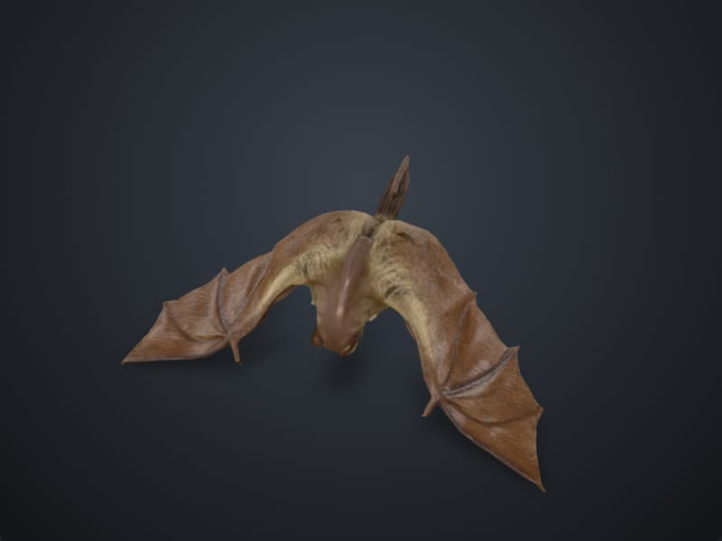
Une chauve-souris de la nuée des galeries de la mine, qui s'envole sans combattre : un décor vivant (D-220). Taille normale, pas « géante » (proposition de groupes-ennemis.md, § 3.3) : petite chauve-souris brune des grottes, ailes de peau brune plus sombres que le corps, oreilles pointues, ventre clair, sans lueur (bible artistique, § 6.5). Modèle léger, fait pour être répété en nombre ; la nuée elle-même se fera dans Unreal, plus tard.
Triangles
2 996 (comme le fichier validé)
Taille
Taille proposée, encore à trancher par le directeur : envergure de 0,38 m (grand murin, une chauve-souris des grottes et des mines d'Europe), de 0,31 à 0,41 m pendant le battement ; 0,18 m de la tête au bout de la queue.
Animations
1 : Battement d'ailes (Flap, 0,5 s). Battement d'ailes en boucle, fait par programme : 13 images à 24 images par seconde, soit 2 battements par seconde à la vitesse 1, celle de la page. Dans Unreal, lecture × 2 conseillée (4 battements par seconde), avec une phase et une cadence un peu différentes pour chaque chauve-souris (× 1,7 à × 2,4).
Défauts connus
De très près, ce n'est pas encore du niveau d'un jeu AAA (D-235 (9), T-0149) : le détail ajouté par programme imite la matière sans l'usure ni les épis qu'un artiste dessinerait, et la couleur d'origine (TRELLIS.2) reste molle ; le gain est discret à distance de jeu, pour une bête de 0,38 m vue en nuée : il se voit surtout de près.
Museau tourné vers le bas : de profil, il pointe à environ 60° sous la direction du vol. Dans l'image FLUX.2, la bête regarde l'objectif ; mise en vol, son visage regarde donc le sol.
La pose de liaison n'est pas une pose de vol : ailes en V, relevées et ramenées vers l'arrière ; queue et pattes arrière relevées, que l'animation abaisse, mais il reste un petit aileron en arrière du dos.
Membrane épaisse de quelques millimètres (une plaque fermée, pour une surface propre) : de près, plus épaisse qu'une vraie membrane, et elle ne laisse pas passer la lumière. Le relief des rides (T-0149) ne la rend pas translucide : à régler dans le matériau maître d'Unreal (T-0132).
Ni pose suspendue au plafond, ni envol : la nuée part déjà en vol.
Peau un peu étirée à la racine des ailes et à la queue (8,8 cm² au pire, 6 triangles) ; 8 petits trous laissés par la réduction. Rien de visible sur les rendus.
Décisions
Tranché par le directeur le 06/10/2026 :
Taille gardée : 0,38 m d'envergure (D-235 (1)).
La nuée pend au plafond et s'envole quand l'araignée arrive, ce qui l'annonce (D-235 (2)).
Questions ouvertes
Pour le directeur, non tranchées :
La nuée : cadence du battement (4 par seconde conseillés) et nombre de chauves-souris (30 dans l'aperçu de la vidéo) ?
Le museau vers le bas : à redresser dans l'animation, ou acceptable pour une bête vue de loin et en nombre ?
Fabrication, licences et fichiers
Fabrication
Images : FLUX.2 [klein] 4B, en local, 6 images (de face et de dos) ; retenue : de face, graine 1, pour son visage lisible ; détourage BiRefNet (rembg).
3D : TRELLIS.2 (graine 42) sur 3 images.
Retouche par programme (Blender, trimesh) : peau pleine refaite (sans elle, la réduction déchirait la membrane), mise en vol, échelle, réduction à 2 996 triangles, UV ; couleur cuite sans le métal de TRELLIS.2 (0,98 de la source), relief recuit ; textures de 1 024 px, un seul matériau.
Squelette de 9 os (corps, tête, queue, 3 os par aile le long du bord d'attaque) et battement d'ailes faits par programme : abaissée ample, vague le long de l'aile, remontée à demi repliée ; boucle sans saut.
Qualité (T-0149, D-240 (1)), le 06/10/2026 : dépliage resserré (41 à 58 % de la texture) ; membranes des ailes et de la queue (rides fines dans le sens de l'envergure, veines, peau un peu luisante), pelage fin sur le corps et la tête ; rugosité par matière et occlusion ; texture gardée en 1 024 px (modèle léger, répété en nombre) ; teinte de la fiche gardée (1,000 de la précédente) ; aucun noir plus sombre que #0C0C0C (D-240 (2)). Forme, squelette et animation inchangés (écart 0,000 cm à chaque image).
Licences
FLUX.2 [klein] 4B : Apache-2.0 · TRELLIS.2 : MIT (avec TRELLIS-image-large, MIT, et DINOv3, usage commercial permis) · BiRefNet et rembg : MIT · trimesh et fast-simplification : MIT · SciPy et scikit-image : BSD · squelette et animation : faits par programme (T-0133), aucune ressource extérieure · détail de matière : fait par programme (T-0149) · Blender (GPL) employé comme outil.
Pour cette page
Textures (couleur, relief, occlusion et rugosité) gardées en 1 024 px, passées de PNG en JPEG. Maillage, squelette et animation inchangés : clés d'animation identiques au bit près à celles du fichier validé (contrôle du 06/10/2026, comparer_anims.mjs). 1,0 Mo en 5 fichiers, au lieu de 4,6 Mo.
Fichier validé
E:\aaa-proto\essai\chauves-souris\chauve_souris.glb Détails : E:\aaa-proto\essai\chauves-souris\LISEZMOI.md ; avis du vérificateur à la fin de T-0133 ; avis des vérificateurs dans T-0149 ; version précédente dans avant-qualite\
Cheval de la monture
T-0134 · validé le 03/10/2026 (correction 4) ; marque et allure gardées le 06/10/2026 (D-235 (3)) ; qualité améliorée le 06/10/2026 (T-0145)
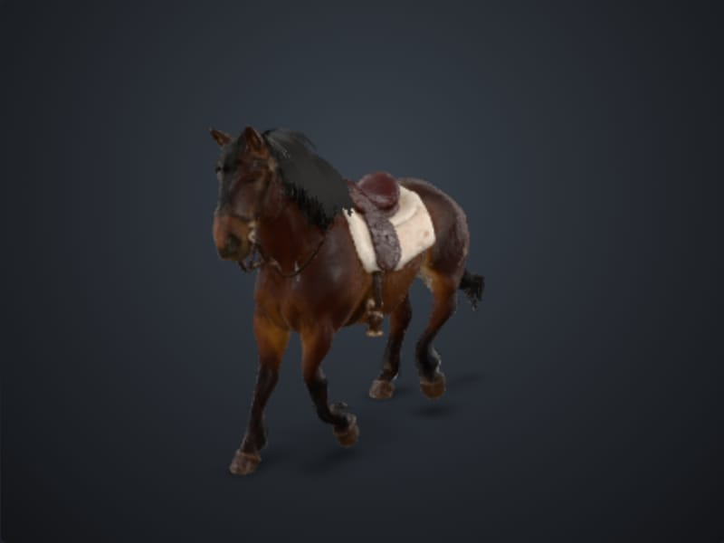
Le cheval que le hameau offre au héros, remis au Pont des Déserteurs (D-184) : un cheval pris aux déserteurs, soldats de l'Ordre, donc un cheval volé de l'Ordre (D-37), reconnu à sa marque aux portes d'Oakhaven (D-204 (4)). Cheval de selle militaire trapu, robe bai brun sombre, crins et bas des jambes noirs, boue sèche ; selle de cuir simple, tapis de laine ivoire sali, sans or ni emblème (bible artistique, § 6.5). Trois allures : pas, trot et galop (D-184, D-194). Marque au fer : le sceptre de l'Ordre sans croix, 16 cm, sur la cuisse arrière gauche.
Triangles
67 551 (comme le fichier validé)
Taille
1,55 m au garrot, 1,95 m aux oreilles ; 2,61 m de long, queue comprise (2,76 m avant T-0145 : le bout relevé de la queue sculptée est rentré sous les crins) ; 0,72 m de large. Taille gardée (D-235 (3)).
Animations
14 : Ruade (Attack_Kick, 0,96 s), Mort (Death, 1 s), Mange (Eating, 6 s), Galop (Gallop, 0,58 s), Saut au galop (Gallop_Jump, 1,46 s), Attente (Idle, 3,33 s), Attente 2 (Idle_2, 3,33 s), Attente, tête basse (Idle_Headlow, 3,33 s), Touché à gauche (Idle_HitReact_Left, 0,67 s), Touché à droite (Idle_HitReact_Right, 0,67 s), Saut puis arrêt (Jump_toIdle, 1,71 s), Cabrage (Rear, 2,42 s), Trot (Trot, 0,67 s), Marche (Walk, 1,17 s). Sur place : dans le jeu, c'est Unreal qui fera avancer le cheval (pas 1,00 m/s, trot 2,12 m/s, galop 3,71 m/s ; sauts à vitesse variable). Rear est un cabrage ; Attack_Kick, la « Ruade de Recul » du cheval militaire (Exploration § 5) ; Gallop_Jump, le saut d'obstacle. Ni monte ni descente du cavalier pour l'instant : aucune animation libre de droits n'a été trouvée.
Défauts connus
De très près, ce n'est pas encore du niveau d'un jeu AAA (D-235 (9), T-0145) : poil fait par programme, sans épi ni remous ; la couleur d'origine (TRELLIS.2) n'a de vrai détail que pour une texture d'environ 1 000 px de côté ; derrière la joue et au haut du front, le bord découpé des crins sculptés se voit encore ; vues de chant, les cartes des fanons font des lames sombres derrière les boulets.
Reflet du noir : de près, sous une lumière de contrôle, le chanfrein et la nuque, noirs, grisent quand on les voit en biais (rendus vers 65 et 49 sur 255, pour une couleur vers 27). À distance de jeu, ils se lisent noirs. Le matériau maître d'Unreal (T-0132) pourra baisser ce reflet.
Des cartes de crins entrent un peu dans la peau : elles suivent les os, sans physique ; au pire instant, 0,8 % de leurs sommets sont à plus de 0,5 cm dedans, surtout des bouts de crinière sous les rênes et des crins de la queue dans la queue sculptée rentrée, où reste une petite boule noire (2 à 3 cm). Dans Death, cheval couché, la crinière passe sous le sol (jusqu'à 7,7 cm) ; au trot, le bout d'un fanon passe 0,6 cm sous le sol. Quelques mèches du garrot passent par-dessus le pommeau de la selle.
Allures lentes à la vitesse de l'animation : pas 1,00 m/s, trot 2,12 m/s, galop 3,71 m/s (un vrai cheval : environ 1,6, 3,5 et 8 à 12 m/s). Les foulées viennent du pack, et les jambes avant, presque tendues, ne vont pas plus loin.
Entre deux clés, le sabot qui se pose ou bascule sur sa pince glisse ou s'enfonce : au pas, jusqu'à 7,4 cm par image et 2,5 cm sous le sol ; 6,6 à Jump_toIdle, 6,4 au galop. Aux clés, aucun sabot posé ne glisse (0,24 cm par image au plus). Prévu : le calage des pieds au sol dans Unreal (IK des sabots). Cette page joue les animations sans ce calage.
Jambes l'une dans l'autre : dans Death, une fois couché (jusqu'à 7,9 cm) ; à l'appel de Gallop_Jump, le sabot arrière gauche entre de 3,2 à 3,8 cm dans l'avant gauche pendant 2 images.
Au galop, à l'image 9, le sabot arrière droit est à 2,2 cm du sol, alors que la pince du pack y touche encore.
Peau étirée à la croupe, à la hanche et un peu à l'encolure au galop, aux sauts et à la ruade (2 117 à 2 336 cm², 2,5 à 2,7 % de la peau, autant que le pack) ; au garrot dans Eating.
Épaule qui glisse, sans à-coup, jusqu'à 8,0 cm au saut d'obstacle et 7,2 cm au trot : le prix des jambes avant presque tendues du modèle.
Eating : genoux fléchis (le cou adapté est plus court que celui du pack). Galop un peu ramassé, ruade, sauts et mort raide : animations du pack ; sauts de rotation d'un os de jambe jusqu'à 55° d'une image à l'autre (ruade), comme le pack. La dernière image de Jump_toIdle n'est pas la pose d'Idle (fondu à faire dans Unreal) ; Rear finit à 4,1 cm de sa première image.
Tache gris-bleu sur le flanc gauche, que la cuisse découvre au galop et à la ruade (71 triangles) ; carrés clairs au bas des jambes arrière (environ 640 cm², texture d'origine).
Rênes faites d'une sangle qui suit l'encolure et peut se déformer quand la tête baisse ; étriers relevés contre la selle (des étriers à part seront à ajouter pour le cavalier) ; petit creux sur la cuisse gauche ; peau pas tout à fait fermée dans la queue (4 arêtes ouvertes, 0,2 à 1 cm, invisibles).
Décisions
Du directeur, le 06/10/2026 (D-235, D-240) :
Marque et allure gardées : la marque proposée (sceptre de l'Ordre sans croix, marqué au fer, 16 cm, cuisse arrière gauche), la robe sombre, le harnais usé, le tapis ivoire sali, les étriers relevés et 1,55 m au garrot (D-235 (3)).
Qualité AAA : le détail n'était pas au niveau d'un jeu AAA (poils en touffe collée), et cela vaut pour tous les modèles faits sur ce PC (D-235 (9)). Les pistes de l'étude de qualité s'appliquent aux modèles existants (D-240 (1)) : qualité améliorée (T-0145), crins en cartes et détail de poil ; les noirs des crins peuvent descendre jusqu'à #0C0C0C (D-240 (2)).
Il aura peur des monstres : il se cabrera devant les morts-vivants, les esprits ou la horde, et le cavalier pourra tomber (D-235 (3), qui prime sur Monture § 3).
La monte et la descente du cavalier seront des animations faites par programme (D-235 (3)).
Ses allures seront refaites avec de vraies foulées, les sabots restant posés, au lieu d'accélérer la lecture (D-235 (6)). Blessé, il boitera (D-235 (7)).
Questions ouvertes
Pour le directeur, non tranchées :
Garder pour la monture Eating, la ruade (Attack_Kick) et les réactions au coup du pack ? (point 5 du LISEZMOI, que D-235 ne tranche pas)
Fabrication, licences et fichiers
Fabrication
Images : FLUX.2 [klein] 4B, en local : 8 images, puis 12 retouchées pour porter la queue en arrière, écartée des cuisses ; détourage BiRefNet (rembg).
Retouche par programme (Blender, trimesh) : surface pleine refaite (le tapis de laine gardait des piqûres), 59 999 triangles, une seule peau, un matériau ; couleur cuite sans le métal de TRELLIS.2 (0,99 de la source en sRGB), relief recuit ; marque proposée peinte dans une variante de la texture de couleur.
Squelette du cheval du pack Quaternius (46 os : paturons et sabots gardés comme os de la jambe) et 12 de ses animations, adaptés au corps ; trot et cabrage faits ici. Sabots calés au sol à chaque image sur les appuis du pack lui-même (deux points et l'angle de chaque sabot) ; une clé par image (24 par seconde) ; boucles sans saut.
Qualité (T-0145, D-240 (1)), le 06/10/2026 : dépliage resserré (22,5 à 42,5 % de la texture) ; détail de poil orienté cuit dans la couleur et le relief, rugosité par matière (robe, crins, sabots, selle, tapis) et occlusion ; crins en cartes : crinière (200), toupet (6), queue en goupillon (190) et fanons (64), 7 552 triangles, qui suivent le squelette ; crinière et queue sculptées d'origine rentrées sous les cartes, crinière et toupet sculptés mis au noir de la fiche (#1B1A19) ; aucun noir plus sombre que #0C0C0C (D-240 (2)) ; tapis ivoire gardé tel quel ; marque gardée refaite sur la nouvelle texture (D-235 (3)). Squelette et animations inchangés (écart 0,000 cm à chaque image, hors crins sculptés déplacés exprès).
Licences
FLUX.2 [klein] 4B : Apache-2.0 · TRELLIS.2 et TRELLIS-image-large : MIT (avec DINOv3, usage commercial permis) · rembg, BiRefNet et trimesh : MIT · SciPy et scikit-image : BSD · cheval animé de Quaternius (Ultimate Animated Animal Pack, pris sur Poly Pizza) : CC0 1.0 · trot, cabrage, calage des sabots et marque : faits par programme (T-0134) · détail de poil et cartes de crins : faits par programme (T-0145) · Blender (GPL) employé comme outil.
Pour cette page
Textures du corps (couleur, relief, occlusion et rugosité) réduites de 4 096 à 2 048 px, en JPEG. Texture des cartes de poils gardée en PNG, telle quelle (cheval_poils.png, 512 × 2 048 px), pour sa transparence. Couleur : la variante avec la marque gardée par le directeur (cheval_BaseColor_marque.png, D-235 (3)) ; le GLB validé, lui, n'a pas la marque. Maillage, squelette et animations inchangés : clés d'animation identiques au bit près à celles du fichier validé (contrôle du 06/10/2026, comparer_anims.mjs). 7,5 Mo en 6 fichiers, au lieu de 50,0 Mo.
Fichier validé
E:\aaa-proto\essai\cheval\cheval.glb Détails : E:\aaa-proto\essai\cheval\LISEZMOI.md ; avis des vérificateurs dans T-0134 et T-0145 ; version précédente dans avant-qualite\
Sanglier
T-0135 · validé le 06/10/2026 (correction 1) ; taille gardée le 06/10/2026 (D-235 (4)) ; qualité améliorée le 06/10/2026 (T-0149, D-240) ; œil sombre le 07/10/2026 (T-0155, D-251 (2))
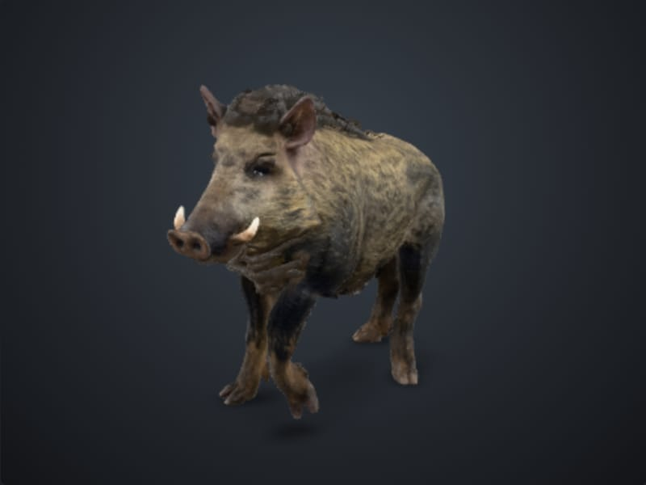
Le gibier de la nature libre autour du hameau : une compagnie de sangliers (D-218), règle qui vaut aussi pour le jeu complet (D-230 (1)). Sanglier d'Europe adulte, un grand mâle : pelage d'hiver gris-brun dru, bas des pattes noir, crête de soies sur le dos, défenses courtes (bible artistique, § 6.5).
Triangles
62 559 (comme le fichier validé)
Taille
0,92 m au plus haut (crête du garrot) : un grand mâle ; 1,20 m de long dans la pose de repos de ce fichier (le LISEZMOI donne 1,30 m du groin au bout de la queue) ; 0,44 m de large. Taille gardée (D-235 (4)).
Animations
11 : Attaque (Attack, 1 s), Charge (Charge, 0,58 s), Mort (Death, 1,25 s), Mange (Eating, 6 s), Galop (Gallop, 0,58 s), Attente (Idle, 3,33 s), Attente 2 (Idle_2, 3,33 s), Attente, tête basse (Idle_Headlow, 3,33 s), Touché à gauche (Idle_HitReact_Left, 0,67 s), Touché à droite (Idle_HitReact_Right, 0,67 s), Marche (Walk, 1,17 s). Sur place : dans le jeu, c'est Unreal qui fera avancer le sanglier (marche 0,47 m/s, course et charge 1,75 m/s). Gallop est sa course ; Charge, la course tête basse ; Attack, le coup de boutoir qui suit la charge ; Eating, la fouille du sol au groin ; « blessé » est rendu par les réactions au coup (Idle_HitReact_Left et _Right).
Défauts connus
De très près, ce n'est pas encore du niveau d'un jeu AAA (D-235 (9), T-0149) : le détail ajouté par programme imite la matière sans l'usure ni les épis qu'un artiste dessinerait, et la couleur d'origine (TRELLIS.2) reste molle ; les défenses sont lisses et brillantes, mais gardent l'ivoire gris de TRELLIS.2.
Des cartes de soies entrent un peu dans la peau : elles suivent les os, sans physique ; au pire instant (Eating, cou baissé), 0,91 % de leurs sommets sont à plus de 0,5 cm sous la peau la plus proche, jusqu'à 1,9 cm, surtout dans la plaque mince de la crête. Pas de soies sur l'avant de la crête, entre les oreilles (cette peau suit les os des oreilles) : elle est seulement teintée. Les soies, teintées comme la peau à leur racine, paraissent plus claires que la crête sombre.
Devant plus sombre qu'avant (T-0149) : épaules, avant-bras, crête, haut du cou et queue dès la racine, là où le gris blanchâtre a été ramené à la fiche ; l'arrière du corps garde sa couleur. Les franges, au gris-brun moyen de la fiche, éclaircissent aussi des parties déjà sombres du bas du cou (environ 335 cm²), que l'image de départ montre noir.
L'œil suit le maillage (T-0155) : la teinte est posée par sommet, sur des arêtes de 9 mm. De très près, la paupière garde la forme anguleuse du croissant de TRELLIS.2, un pli gris reste à droite, et l'œil gauche paraît plus grand que le droit (les deux yeux livrés ne sont pas symétriques). À distance normale, l'œil se lit petit, sombre et humide.
Allures lentes à la vitesse de l'animation : marche 0,47 m/s, course et charge 1,75 m/s (un sanglier qui charge dépasse 10 m/s).
Entre deux clés, le sabot qui se pose ou bascule sur sa pince glisse ou s'enfonce un peu : au pas, 4,2 cm par image et 0,82 cm sous le sol ; à la course et à la charge, 5,0 cm par image et 0,46 cm sous le sol. Aux clés, aucun sabot posé ne glisse (0,45 cm par image au plus). Prévu : le calage des pieds au sol dans Unreal. Cette page joue les animations sans ce calage.
Pas de cheval : sur des pattes courtes, la marche paraît un peu sautillante.
Death : en tombant sur le flanc, les sabots du côté du sol glissent (jusqu'à 10,6 cm par image) et passent 1,69 cm sous le sol entre deux images ; couché, les pattes restent raides, tendues sur le côté.
Peau étirée à la course et à la charge (1 758 et 2 102 cm²) et au pas (752 cm²).
Crête et franges : la crête reste une plaque sculptée sous les soies, et les franges sous le menton, le cou et derrière les pattes avant restent des lambeaux sculptés ; seule leur couleur a changé (T-0149 : sombre, comme dans l'image FLUX.2). De près, on voit encore leur forme.
Queue raccourcie à 0,40 m (choix de l'exécutant ; TRELLIS.2 la faisait pendre presque jusqu'au sol) : elle pend près des fesses et peut les frôler.
Cuisses : au pas, un sommet de l'intérieur d'une cuisse entre de 4,4 cm dans l'autre ; à la course et à la charge, 5 sommets de 2,3 à 2,7 cm, là où les cuisses se touchent déjà au repos.
Décisions
Du directeur, le 06/10/2026 (D-235) et le 07/10/2026 (D-251) :
Taille gardée ; des laies d'environ 0,75 m viendront pour la compagnie (D-235 (4)).
Il fuit d'habitude, mais chargera (coup de boutoir) s'il est menacé : si on l'approche de trop près ou si on le blesse (D-235 (4)). Blessé, il boitera (D-235 (7)).
Sa course sera refaite avec de vraies foulées, les sabots restant posés, au lieu d'accélérer la lecture (D-235 (6)).
Crête couchée et sombre, gardée telle quelle (D-251 (1)) ; œil sombre, petit et presque noir comme dans l'image de départ, fait par T-0155 (D-251 (2)).
Questions ouvertes
Pour le directeur, non tranchées :
Franges du cou au gris-brun moyen de la fiche, qui éclaircissent un peu le bas du cou que l'image de départ montre noir : à garder ? (point de T-0149 ; la crête et l'œil sont tranchés par D-251)
Fabrication, licences et fichiers
Fabrication
Images : FLUX.2 [klein] 4B, en local, 4 images ; retenue : graine 2 (la graine 1 avait des défenses de phacochère, les graines 3 et 4 regardaient l'objectif) ; détourage BiRefNet (rembg).
3D : TRELLIS.2 sur 2 images (60 000 faces, texture 4 096 px).
Retouche par programme (Blender, trimesh) : surface pleine, une peau fermée de 59 994 triangles (et 5 triangles isolés d'aire quasi nulle), un matériau ; couleur cuite sans le métal de TRELLIS.2 (0,98 de la source en sRGB), relief recuit ; queue refaite et raccourcie à 0,40 m.
Squelette (46 os) et animations du cheval du pack Quaternius, adaptés au corps : le sanglier a des sabots, comme le cheval. Gestes de cheval retirés, coup de tête gardé comme coup de boutoir ; charge, mort et balancement de la queue faits ici ; encolure amortie à 40 % aux allures. Sabots calés au sol avec le calage final du cheval (T-0134), sur les appuis du pack lui-même ; une clé par image ; boucles sans saut ; au plus 4 os par sommet (correction 1).
Qualité (T-0149, D-240 (1)), le 06/10/2026 : dépliage resserré (33 à 51 % de la texture) ; détail de matière orienté cuit dans la couleur et le relief (soies drues, groin en cuir humide, défenses lisses, sabots en corne), rugosité par matière et occlusion ; soies en cartes : 320 sur la ligne du dos, couchées vers l'arrière (2 560 triangles), en 3 teintes prises dans la fiche, qui suivent le squelette ; teinte ramenée à la fiche : la crête, les franges du cou, les traînées derrière les pattes avant et toute la queue, gris blanchâtre chez TRELLIS.2, prennent le sombre de la fiche et de l'image de départ (forme inchangée ; les yeux et leur pourtour gardent leur couleur) ; aucun noir plus sombre que #0C0C0C (D-240 (2)). Forme, squelette et animations inchangés (écart 0,000 cm à chaque image).
Œil sombre (T-0155, D-251 (2)), le 07/10/2026 : le globe prend la teinte de l'œil de l'image de départ (#1C1C1E), lisse et humide (rugosité 0,12, comme l'œil du lapin) ; le croissant blanc de TRELLIS.2 redevient paupière, dans le ton de la tête (#3F3834) ; aucun noir plus sombre que #0C0C0C (D-240 (2)). Hors des yeux, couleur, rugosité et relief inchangés (au plus 1/255 sur quelques dizaines de texels) ; forme, squelette et animations inchangés.
Licences
FLUX.2 [klein] 4B : Apache-2.0 · TRELLIS.2 et TRELLIS-image-large : MIT (avec DINOv3, usage commercial permis) · rembg, BiRefNet et trimesh : MIT · SciPy et scikit-image : BSD · cheval animé de Quaternius (Ultimate Animated Animal Pack) : CC0 1.0, déjà pris pour T-0134 · charge, mort, queue, fouille et calage : faits par programme (T-0135) · détail de matière et cartes de soies : faits par programme (T-0149) · œil sombre : fait par programme (T-0155) · Blender (GPL) employé comme outil.
Pour cette page
Textures du corps (couleur, relief, occlusion et rugosité) réduites de 4 096 à 2 048 px, en JPEG. Texture des cartes de soies gardée en PNG, telle quelle (sanglier_poils.png, 1 536 × 2 048 px), pour sa transparence. Maillage, squelette et animations inchangés : clés d'animation identiques au bit près à celles du fichier validé (contrôle du 07/10/2026, comparer_anims.mjs). 6,9 Mo en 6 fichiers, au lieu de 51,9 Mo.
Fichier validé
E:\aaa-proto\essai\gibier\sanglier\sanglier.glb Détails : E:\aaa-proto\essai\gibier\sanglier\LISEZMOI.md ; avis des vérificateurs dans T-0135, T-0149 et T-0155 ; version précédente dans avant-qualite\
Lapin de garenne
T-0135 · validé le 06/10/2026 (correction 1) ; taille gardée le 06/10/2026 (D-235 (4)) ; qualité améliorée le 06/10/2026 (T-0149, D-240)
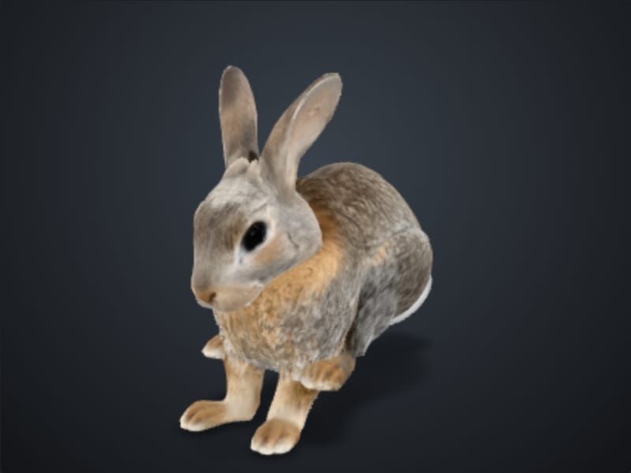
Le petit gibier de la nature libre autour du hameau (D-218, D-230 (1)) : un lapin d'ambiance, qui fuit. Lapin de garenne assis en alerte : pelage gris-brun agouti, ventre chamois clair, petite queue blanche, oreilles dressées (bible artistique, § 6.5).
Triangles
30 000 (comme le fichier validé)
Taille
0,27 m aux oreilles, assis ; 0,29 m de long ; 0,17 m de large. Taille gardée (D-235 (4)).
Animations
4 : Mort (Death, 1,5 s), Fuite (Flee, 0,5 s), Saut (Hop, 0,67 s), Attente (Idle, 3 s). Faites par programme, sur place : dans le jeu, c'est Unreal qui fera avancer le lapin (saut 0,35 m/s, fuite 1,4 m/s). Hop est le déplacement lent ; Flee, la fuite en demi-bonds, oreilles couchées ; Death, un sursaut puis une chute sur le flanc.
Défauts connus
De très près, ce n'est pas encore du niveau d'un jeu AAA (D-235 (9), T-0149) : le détail ajouté par programme imite la matière sans l'usure ni les épis qu'un artiste dessinerait, et la couleur d'origine (TRELLIS.2) reste molle ; elle a déjà des traits de poil peints, que le détail prolonge sans les remplacer : le gain reste discret à distance de jeu.
Pattes l'une dans l'autre au saut et à la fuite : le genou et la jambe entrent dans l'avant-bras du même côté (jusqu'à 4,3 cm), et l'intérieur des cuisses se recouvre sous le ventre. Le lapin est généré assis : cuisses, ventre et pattes avant sont collés dans la peau. Le vérificateur en mesure 0,8 cm hors recouvrements du repos. Non touché par la mise à niveau de qualité (T-0149) : ce défaut sera corrigé plus tard (D-235 (8)).
Avant-bras sous le sol : 0,41 cm au saut, 0,5 cm à la fuite entre deux images.
Pieds qui glissent un peu au lever et à la pose : 1,2 cm par image une fois au saut, 2,5 cm par image à la fuite (pieds arrière).
Allures lentes : 0,35 et 1,4 m/s (un lapin qui fuit dépasse 10 m/s).
Peau étirée aux cuisses et aux jambes quand le corps se tend (259 cm² à la fuite).
Œil en grand disque noir : il a maintenant un reflet (T-0149), mais sa forme ne change pas.
Death : couché, les pattes se replient l'une dans l'autre ; le corps glisse un peu en tombant (0,7 cm).
Décisions
Du directeur, le 06/10/2026 (D-235) :
Taille gardée (D-235 (4)).
Sa fuite sera refaite avec de vraies foulées, les pieds restant posés, au lieu d'accélérer la lecture (D-235 (6)).
Les pattes qui se recouvrent seront corrigées : ce défaut n'est plus accepté (D-235 (8)).
Fabrication, licences et fichiers
Fabrication
Images : FLUX.2 [klein] 4B, en local, 4 images ; retenue : graine 1 (les graines 3 et 4 ont deux têtes, la graine 2 regarde l'objectif) ; détourage BiRefNet (rembg).
3D : TRELLIS.2 (60 000 faces, texture 4 096 px).
Retouche par programme (Blender, trimesh) : surface pleine, une peau fermée de 29 986 triangles (et 14 triangles isolés d'aire quasi nulle), un matériau, textures de 2 048 px ; couleur cuite sans le métal de TRELLIS.2 (0,98 de la source en sRGB).
Squelette (21 os), poids et 4 animations faits par programme, sans pack : le loup et le cheval du pack ne sautent pas. Pieds posés fixés au sol par IK ; au plus 4 os par sommet (correction 1) ; boucles sans saut.
Qualité (T-0149, D-240 (1)), le 06/10/2026 : dépliage resserré (32 à 46 % de la texture) ; détail de matière orienté cuit dans la couleur et le relief (pelage fin, truffe en cuir, queue plus floconneuse), rugosité par matière et occlusion ; œil lisse et brillant ; pas de cartes de poils (pas de poils longs) ; teinte de la fiche gardée (1,000 de la précédente) ; aucun noir plus sombre que #0C0C0C (D-240 (2)). Forme, squelette et animations inchangés (écart 0,000 cm à chaque image).
Licences
FLUX.2 [klein] 4B : Apache-2.0 · TRELLIS.2 et TRELLIS-image-large : MIT (avec DINOv3, usage commercial permis) · rembg, BiRefNet et trimesh : MIT · SciPy et scikit-image : BSD · squelette, poids et animations : faits par programme (T-0135), aucune ressource extérieure · détail de matière : fait par programme (T-0149) · Blender (GPL) employé comme outil.
Pour cette page
Textures (couleur, relief, occlusion et rugosité) gardées en 2 048 px, passées de PNG en JPEG. Maillage, squelette et animations inchangés : clés d'animation identiques au bit près à celles du fichier validé (contrôle du 06/10/2026, comparer_anims.mjs). 4,4 Mo en 5 fichiers, au lieu de 14,9 Mo.
Fichier validé
E:\aaa-proto\essai\gibier\lapin\lapin.glb Détails : E:\aaa-proto\essai\gibier\lapin\LISEZMOI.md ; avis des vérificateurs dans T-0135 et T-0149 ; version précédente dans avant-qualite\
Perdrix grise
T-0135 · validé le 06/10/2026 (correction 1) ; taille gardée le 06/10/2026 (D-235 (4)) ; qualité améliorée le 06/10/2026 (T-0149, D-240)
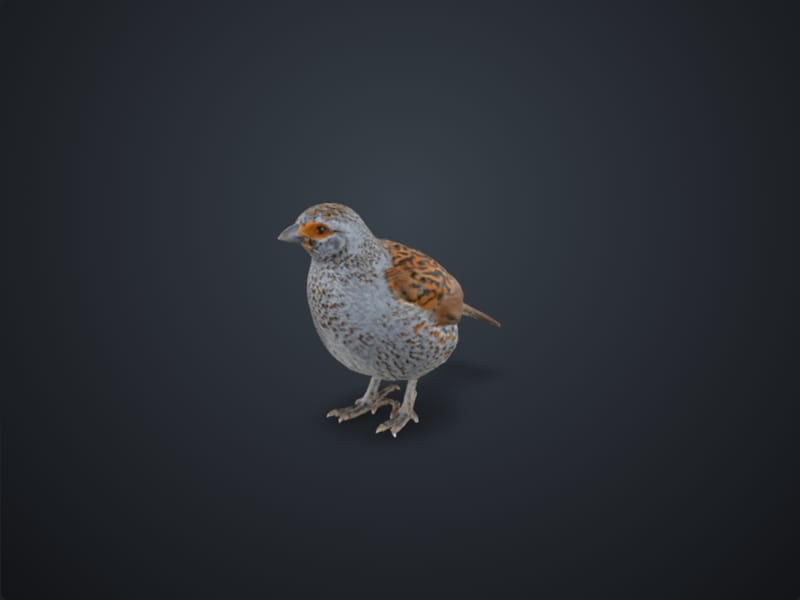
L'oiseau du gibier de la nature libre autour du hameau (D-218, D-230 (1)) : une compagnie posée au sol, qui part en vol à l'approche. Perdrix grise (espèce proposée à T-0135) : poitrine grise finement vermiculée, flancs barrés de roux, dos brun strié, face orangée (bible artistique, § 6.5).
Triangles
18 000 (comme le fichier validé)
Taille
0,27 m du bec au bout de la queue ; 0,21 m de haut, posée ; envergure de 0,28 à 0,44 m pendant le battement. Taille gardée (D-235 (4)).
Animations
5 : Mort (Death, 1,25 s), Mort au sol (Death_Ground, 1 s), Vol (Fly, 0,33 s), Attente (Idle, 3 s), Envol (TakeOff, 1 s). Faites par programme, sur place : dans le jeu, c'est Unreal qui fera monter et voler la perdrix. Idle : posée au sol, avec un coup de bec ; TakeOff : envol, le corps change à l'image 8 ; Fly : vol en boucle, 3 battements par seconde à la vitesse 1, celle de la page (à lire × 2 à × 3 dans Unreal) ; Death : mort en vol, chute de 10 cm ; Death_Ground : mort au sol.
Défauts connus
De très près, ce n'est pas encore du niveau d'un jeu AAA (D-235 (9), T-0149) : le détail ajouté par programme imite la matière sans l'usure ni les épis qu'un artiste dessinerait, et la couleur d'origine (TRELLIS.2) reste molle ; les rémiges restent une texture sur des ailes en plaques ; l'œil n'a pas de matière propre (celle du plumage) ; le bec n'est vraiment lisse qu'au cœur (rugosité 0,42 ; 0,49 en moyenne sur le gris du bec du corps posé, 0,53 en vol).
Deux corps : un seul maillage ne peut pas être à la fois posé, ailes repliées, et en vol, ailes ouvertes. Le changement se fait en une image dans TakeOff et se voit de près (l'oiseau posé rétrécit pendant que l'oiseau en vol grandit). Générés à part, les deux corps n'ont pas tout à fait la même teinte (en vol, plus gris, face plus rouge) ni la même tête. Non touché par la mise à niveau de qualité (T-0149) : ce défaut sera corrigé plus tard (D-235 (8)).
Battement lent à la vitesse 1 : 3 par seconde, quand une perdrix bat des ailes environ 10 fois par seconde.
Ailes en plaques : le corps en vol n'a que 5 932 triangles, et les rémiges ne sont qu'une texture.
Queue longue pour une perdrix ; envergure un peu courte (0,44 m au plus).
Bas des tarses 0,09 cm sous le sol à l'attente, 0,16 cm à l'envol.
Mort en vol : chute de 10 cm seulement dans l'animation ; elle finit sur le dos, ailes à demi ouvertes.
Décisions
Du directeur, le 06/10/2026 (D-235) :
Taille gardée (D-235 (4)).
Le changement de corps (deux corps) sera corrigé : ce défaut n'est plus accepté (D-235 (8)).
Les oiseaux du jeu seront de plusieurs sortes : perdrix et petits oiseaux là où c'est paisible, corbeaux et charognards près des morts-vivants et des charniers, selon aussi la saison, la météo et la présence des hommes (D-235 (5)).
Fabrication, licences et fichiers
Fabrication
Images : FLUX.2 [klein] 4B, en local : posée (graine 1) et en vol vue de côté (graine 3). Une vue de dessus est refusée : TRELLIS.2 en faisait un oiseau penché à 33°, pattes pendantes. Détourage BiRefNet (rembg).
3D : TRELLIS.2 (60 000 faces, texture 4 096 px) : 2 corps posés et 4 corps en vol comparés.
Retouche par programme (Blender, trimesh) : deux corps sur un même squelette, chacun une peau fermée : posé (12 000 triangles) et en vol (5 932 triangles, et 68 triangles isolés d'aire quasi nulle) ; le corps caché est réduit à l'échelle 0,001 par son os. Couleurs cuites sans le métal de TRELLIS.2 (0,99 de la source en sRGB), textures de 2 048 px, deux matériaux.
Squelette (20 os), poids et 5 animations faits par programme, sans pack ; pieds posés fixes ; au plus 4 os par sommet (correction 1) ; boucles sans saut.
Qualité (T-0149, D-240 (1)), le 06/10/2026 : dépliage resserré (corps posé : 49 à 60 % de sa texture ; corps en vol : 39 à 54 %) ; détail de matière orienté cuit dans la couleur et le relief (plumage en écailles allongées à barbes fines, bec lisse, tarses écailleux), rugosité par matière et occlusion, chaque corps avec sa texture (occlusion cuite l'autre corps réduit, comme dans le jeu) ; pas de cartes de plumes ; teinte de la fiche gardée (1,01 de la précédente) ; aucun noir plus sombre que #0C0C0C (D-240 (2)). Forme, squelette et animations inchangés (écart 0,000 cm à chaque image).
Licences
FLUX.2 [klein] 4B : Apache-2.0 · TRELLIS.2 et TRELLIS-image-large : MIT (avec DINOv3, usage commercial permis) · rembg, BiRefNet et trimesh : MIT · SciPy et scikit-image : BSD · squelette, poids et animations : faits par programme (T-0135), aucune ressource extérieure · détail de matière : fait par programme (T-0149) · Blender (GPL) employé comme outil.
Pour cette page
Textures des deux corps (couleur, relief, occlusion et rugosité) gardées en 2 048 px, passées de PNG en JPEG ; les deux matériaux (corps posé, corps en vol) sont gardés. Maillage, squelette et animations inchangés : clés d'animation identiques au bit près à celles du fichier validé (contrôle du 06/10/2026, comparer_anims.mjs). 5,7 Mo en 8 fichiers, au lieu de 26,6 Mo.
Fichier validé
E:\aaa-proto\essai\gibier\perdrix\perdrix.glb Détails : E:\aaa-proto\essai\gibier\perdrix\LISEZMOI.md ; avis des vérificateurs dans T-0135 et T-0149 ; version précédente dans avant-qualite\
Essais de la chaîne de fabrication
Les premiers essais de la génération 3D en local (T-0053, D-164, D-165), jugés bons à la validation. Ce sont des sorties brutes de TRELLIS.2, pas des modèles prêts pour le jeu. Le soldat, le mort-vivant et l'esprit de ces essais ne sont pas repris : ils ont été refaits pour le jeu (plus haut).
Rocher
T-0053 · essai validé le 30/09/2026
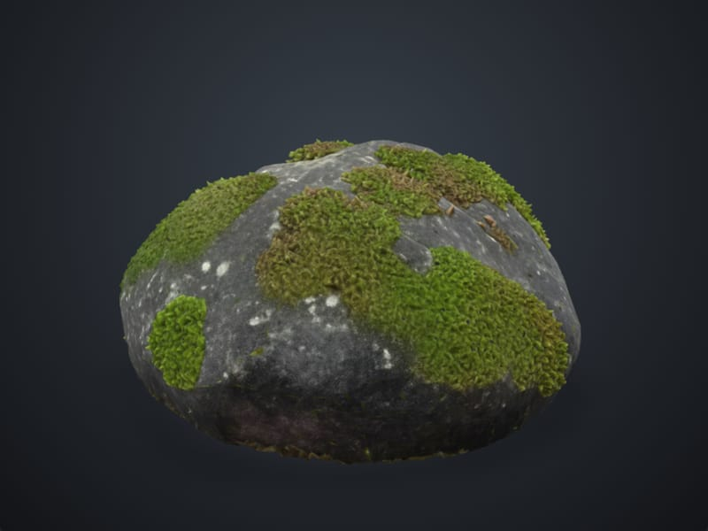
Pas d'animation dans ce modèle.
Essai de la chaîne sur un objet du décor. Pour les rochers du jeu, l'étude conseille d'abord des scans libres (Poly Haven).
Triangles
129 812 dans cette page (le fichier validé en a 295 121)
Taille
Sortie brute, dans un cube d'une unité : échelle non réglée.
Animations
Aucune : objet.
Défauts connus
Export par défaut de TRELLIS.2 : coque double à paroi mince, dont la moitié des triangles est dans la paroi intérieure, invisible.
Non préparé pour le jeu (échelle, pivot, budget de triangles).
Fabrication, licences et fichiers
Fabrication
Image : banc d'essai, FLUX.2 [klein] (« entrée v2 »). La première entrée, claire et lisse, donnait une roche « pâte à modeler ».
3D : TRELLIS.2 (graine 42), export par défaut, texturé.
Essai de la chaîne sur la fiche du héros au réveil (D-163). Ce n'est pas le héros du prototype : son corps et son visage sont un MetaHuman (T-0052) et sa tenue est la « Tenue du héros » plus haut.
Triangles
82 054 dans cette page (le fichier validé en a 292 410)
Taille
Sortie brute, dans un cube d'une unité : échelle non réglée.
Animations
Aucune. Le squelette d'essai d'UniRig (28 os, T-0053) n'est pas repris : il n'avait pas d'animation.
Défauts connus
Visage un peu adouci par rapport à la fiche.
Export par défaut de TRELLIS.2 : coque double à paroi mince, dont la moitié des triangles est dans la paroi intérieure, invisible.
Fabrication, licences et fichiers
Fabrication
Image : fiche du héros au réveil personnages\heros-reveil.png, faite avec Codex, l'outil d'images d'OpenAI, le 29/09/2026 (personnages\LISEZMOI.md) ; épée retirée, détourée.
3D : TRELLIS.2 (graine 42), export par défaut, texturé.
Licences
Fiche d'entrée : image faite avec l'outil d'images d'OpenAI (Codex), d'après personnages\LISEZMOI.md ; ses conditions d'usage n'ont pas été relues pour cette page et restent à vérifier. · TRELLIS.2 : MIT (avec DINOv3, usage commercial permis) · rembg et BiRefNet : MIT.
Pour cette page
Allégé pour la page (simplification du maillage, meshoptimizer) et textures de 2 048 px en JPEG. 4,6 Mo en 4 fichiers, au lieu de 18,3 Mo.
Captures en jeu (Unreal 5.8), déjà validées, recadrées et réduites. Pas encore de 3D, et ce n'est pas une question de licence : depuis MetaHuman 5.6, ces personnages relèvent de la licence d'Unreal et peuvent servir hors d'Unreal (étude MetaHuman, § 5). Leur export en 3D (cheveux, peau, squelette du visage) est un travail à faire dans Unreal, prévu plus tard. Deux points de cette licence restent à vérifier avant de les sortir d'Unreal : les animations AS_MH_* et les tenues Fab « UE-Only ».
Le héros
T-0052
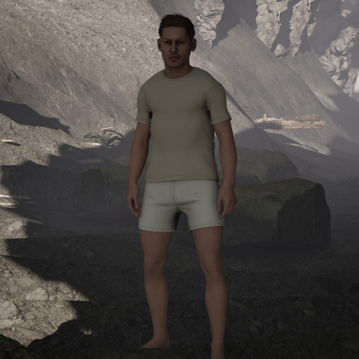
en pied
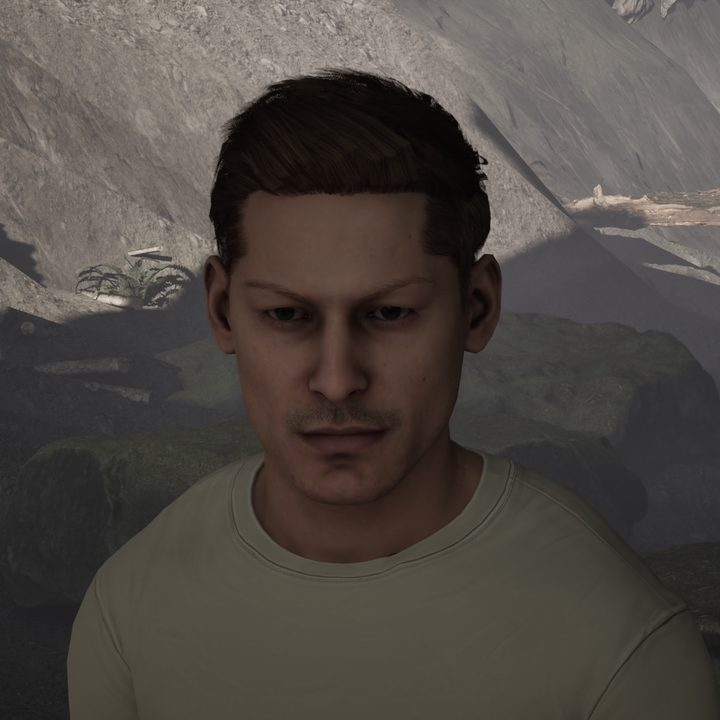
visage
MetaHuman, au réveil dans les Gorges (captures en jeu du 30/09/2026). Il porte encore les vêtements d'exemple du MetaHuman ; sa tenue est la « Tenue du héros » en 3D plus haut.
Le forgeron du hameau
T-0094
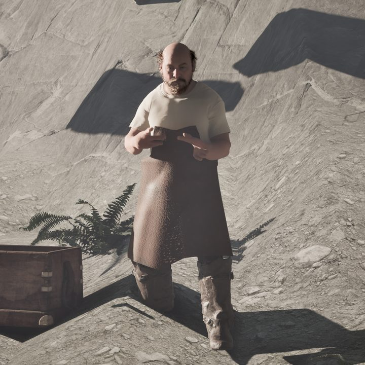
en pied
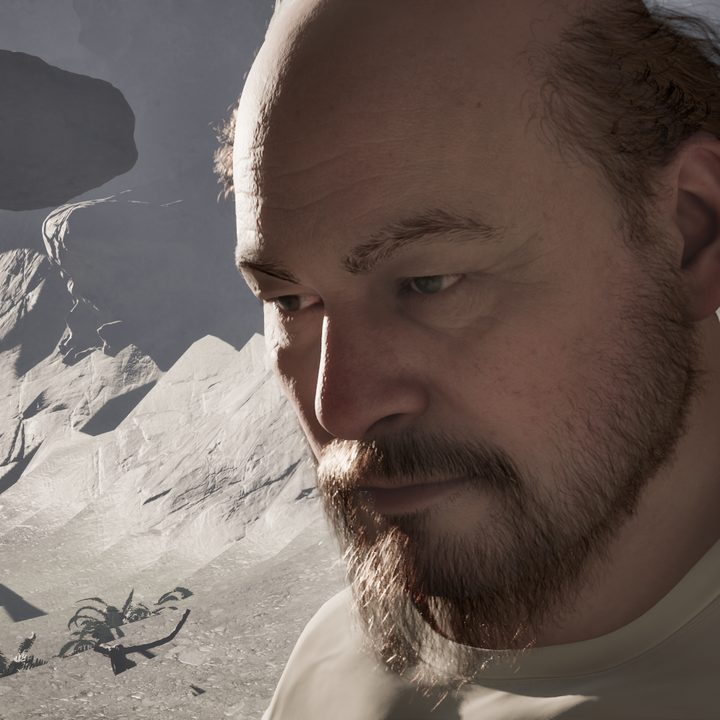
visage de trois quarts
MetaHuman fait selon sa fiche, avec sa tenue de forgeron (captures en jeu du 01/10/2026).
Le chef du Hameau de la Brume
T-0110
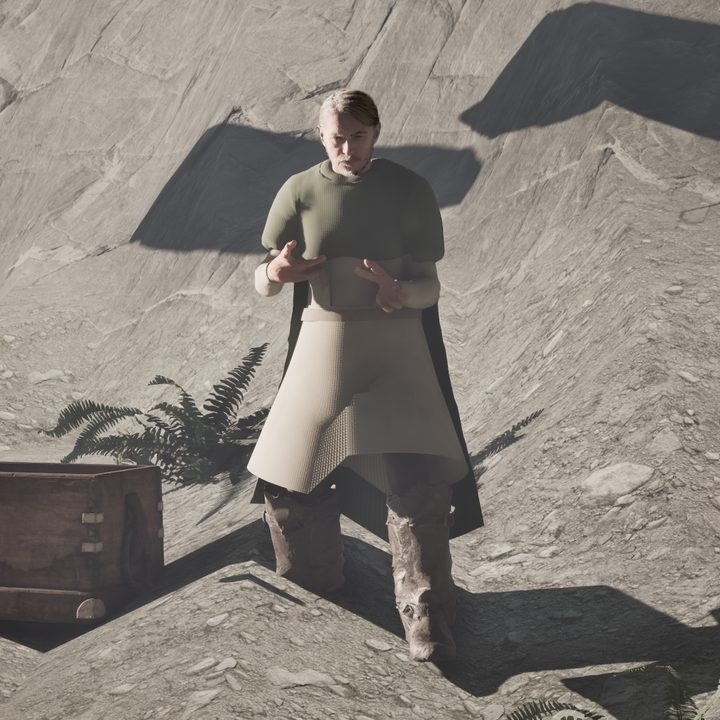
en pied
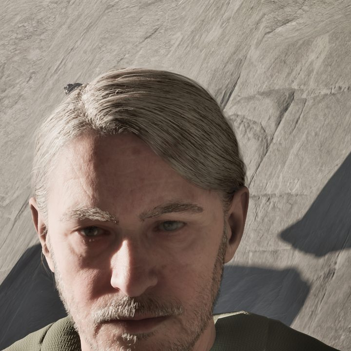
visage
MetaHuman fait selon sa fiche (captures en jeu du 01/10/2026).
L'agente du Cartel de la Brume
T-0110
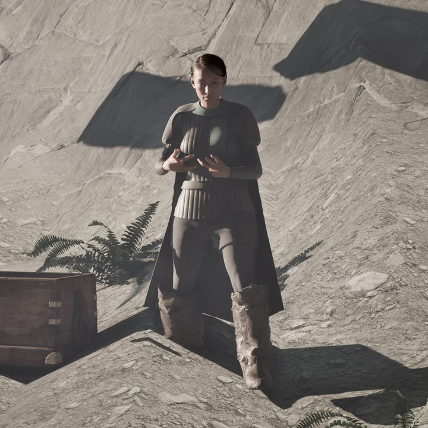
en pied
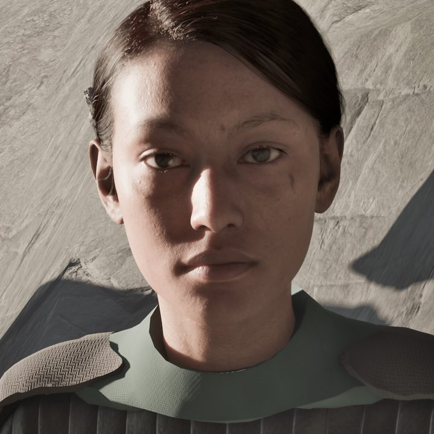
visage
MetaHuman fait selon sa fiche, qui propose une femme (D-217) ; captures en jeu du 01/10/2026.
Le capitaine des portes d'Oakhaven
T-0110
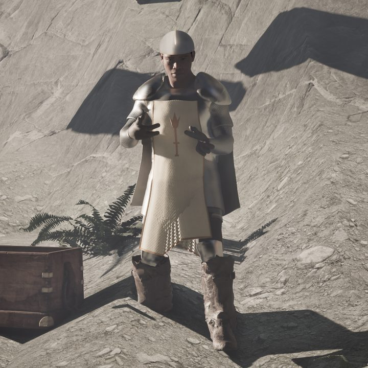
en pied
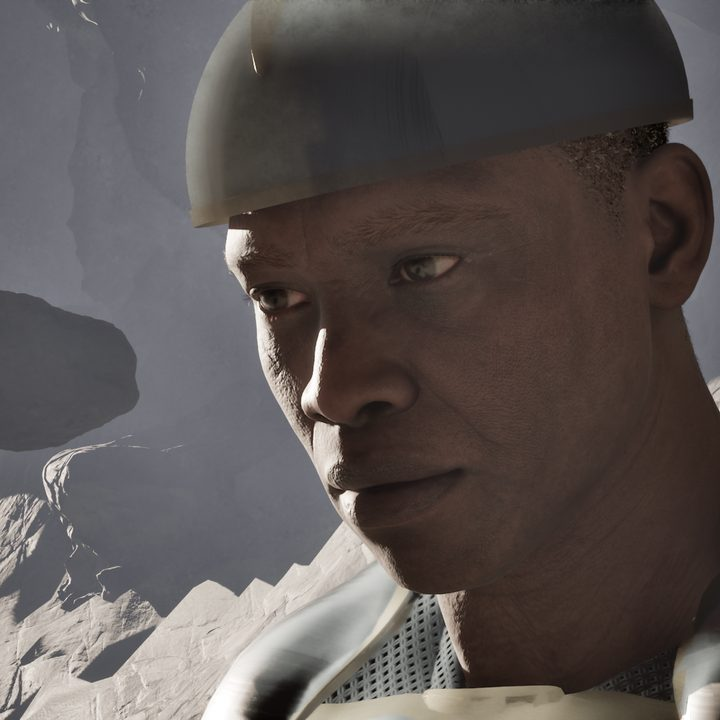
visage de trois quarts
MetaHuman fait selon sa fiche (captures en jeu du 01/10/2026).
Comment la page est faite
Visionneuse :<model-viewer> 4.3.1 (Google, Apache-2.0), chargée depuis cdn.jsdelivr.net, version fixée et empreinte vérifiée par le navigateur.
Fichiers : chaque modèle est un glTF en plusieurs fichiers : sa description en .json (le fichier .gltf, renommé), ses données en .wasm et ses textures en JPEG de 2 048 px au plus. Seules les textures des cartes de crins et de poils (cheval, loup, chien, sanglier) restent en PNG, telles quelles, pour garder leur transparence. Le .wasm n'est pas du WebAssembly : c'est le fichier de données .bin du glTF, simplement renommé, parce que l'hébergement ne sert ni .gltf ni .bin. Aucune compression qui demande un décodeur venu d'ailleurs (ni Draco, ni KTX2, ni meshopt).
Pourquoi pas un seul fichier .glb : la visionneuse lit les textures rangées dans un GLB par une adresse « blob: », qu'une page aussi fermée que celle-ci peut bloquer ; le modèle s'affiche alors tout blanc (essai fait avec la même règle de sécurité). Des textures en fichiers séparés se chargent comme le reste de la page.
Les fichiers validés ne sont pas modifiés : la page en utilise des copies allégées. Les personnages sans animation y perdent leur squelette, sans changer de forme. Les modèles animés gardent toutes leurs clés d'animation, identiques au bit près à celles du fichier validé. Quand un modèle est à facettes (une normale par triangle), ses normales ne sont pas stockées : la visionneuse les recalcule, pour le même rendu et un fichier presque deux fois plus léger.
Modèle
Ticket
Triangles
Fichiers
Taille, aperçu compris
Plus gros fichier
Fichier validé
Loup
T-0097
65 600
7
6,8 Mo
3,0 Mo
46,2 Mo
Mort-vivant
T-0056
43 947
6
5,5 Mo
2,9 Mo
23,4 Mo
Meneur de la horde
T-0153
63 025
6
8,8 Mo
3,1 Mo
81,5 Mo
Mort-vivant soldat
T-0154
47 990
6
7,3 Mo
2,6 Mo
75,6 Mo
Mort-vivant archer
T-0154
39 607
6
7,6 Mo
2,8 Mo
77,1 Mo
Mort-vivant déserteur
T-0154
44 204
6
7,1 Mo
2,7 Mo
73,1 Mo
Mort-vivant sergent
T-0154
42 114
6
8,3 Mo
3,2 Mo
82,4 Mo
Esprit
T-0056
58 596
6
3,9 Mo
1,7 Mo
22,9 Mo
Soldat de l'Ordre
T-0058
51 729
6
6,1 Mo
2,4 Mo
26,8 Mo
Possédé
T-0058
52 325
6
6,4 Mo
2,5 Mo
26,9 Mo
Ange Déchu (silhouette)
T-0058
59 601
5
3,7 Mo
2,1 Mo
12,9 Mo
Tenue du héros
T-0056
84 576
9
6,6 Mo
2,9 Mo
33,2 Mo
Épée rouillée
T-0056
19 904
5
1,6 Mo
0,6 Mo
7,7 Mo
Arc du soldat
T-0058
11 796
5
1,1 Mo
0,4 Mo
7,2 Mo
Bouclier du soldat
T-0058
11 709
5
1,5 Mo
0,6 Mo
10,3 Mo
Chien de berger
T-0123
64 510
7
7,1 Mo
3,0 Mo
46,0 Mo
Araignée géante
T-0133
57 089
6
6,3 Mo
3,0 Mo
48,0 Mo
Chauve-souris
T-0133
2 996
6
1,1 Mo
0,4 Mo
4,6 Mo
Cheval de la monture
T-0134
67 551
7
7,5 Mo
3,8 Mo
50,0 Mo
Sanglier
T-0135
62 559
7
6,9 Mo
3,1 Mo
51,9 Mo
Lapin de garenne
T-0135
30 000
6
4,4 Mo
1,6 Mo
14,9 Mo
Perdrix grise
T-0135
18 000
9
5,7 Mo
1,0 Mo
26,6 Mo
Rocher
T-0053
129 812
5
6,6 Mo
5,3 Mo
20,1 Mo
Maison
T-0053
93 660
5
5,9 Mo
3,7 Mo
22,4 Mo
Héros au réveil (essai)
T-0053
82 054
5
4,6 Mo
3,2 Mo
18,3 Mo
25 modèles et 10 images : 139,1 Mo en tout. Aucun fichier ne dépasse 15 Mo.
Sources
Tickets validés : T-0097 (loup), T-0056 (créatures, tenue, épée), T-0058 (soldat, arc, bouclier, possédé, Ange Déchu), T-0053 (essais), T-0123 (chien de berger), T-0133 (araignée géante, chauve-souris), T-0134 (cheval de la monture), T-0135 (sanglier, lapin, perdrix), T-0145 (qualité du cheval, du loup et du chien), T-0149 (qualité du sanglier, du lapin, de la perdrix, de l'araignée et de la chauve-souris), T-0153 (meneur de la horde), T-0154 (morts-vivants variés), T-0155 (œil sombre du sanglier), T-0052, T-0094 et T-0110 (MetaHuman). Décisions : D-03, D-37, D-163 à D-166, D-184, D-194, D-204, D-213, D-215, D-216, D-217, D-218, D-220, D-223, D-224, D-230, D-234, D-235, D-240, D-250, D-251. Étude MetaHuman, § 5. Bible artistique, § 4 et § 6.5 ; groupes-ennemis.md, § 3.3 ; Design du Didacticiel ; Structure - Quêtes Secondaires par Zone.
E:\aaa-proto\essai\loup\ (loup.glb, LISEZMOI.md) · E:\aaa-proto\essai\chien\ (chien.glb, LISEZMOI.md) · E:\aaa-proto\essai\araignee\ (araignee.glb, LISEZMOI.md) · E:\aaa-proto\essai\chauves-souris\ (chauve_souris.glb, LISEZMOI.md) · E:\aaa-proto\essai\cheval\ (cheval.glb, cheval_BaseColor_marque.png, LISEZMOI.md) · E:\aaa-proto\essai\gibier\ (sanglier, lapin et perdrix : GLB et LISEZMOI.md de chacun) · E:\aaa-proto\essai\horde\ (meneur\ et morts-vivants\ : GLB et LISEZMOI.md) ·E:\aaa-proto\echange\ (GLB livrés par gen3d, LISEZMOI.md) · E:\aaa-proto\gen3d\ (RAPPORT.md, sorties\trellis2\)
E:\aaa-proto\unreal-v2\captures\ (heros\jeu, forgeron\apres, pnj) : lus, non modifiés
E:\aaa-proto\personnages\LISEZMOI.md (origine des fiches d'entrée) · D:\aaa-game\.equipe\etudes\etude-metahuman.md (§ 5, licence)
E:\aaa-proto\livrables\modeles-3d\_travail\ (alleger.mjs, construire_page.mjs, comparer_anims.mjs, verifier.mjs, images.py, modeles.json)